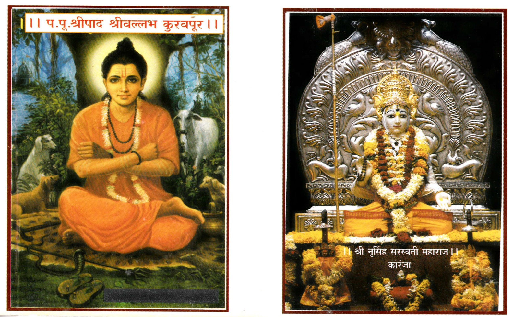
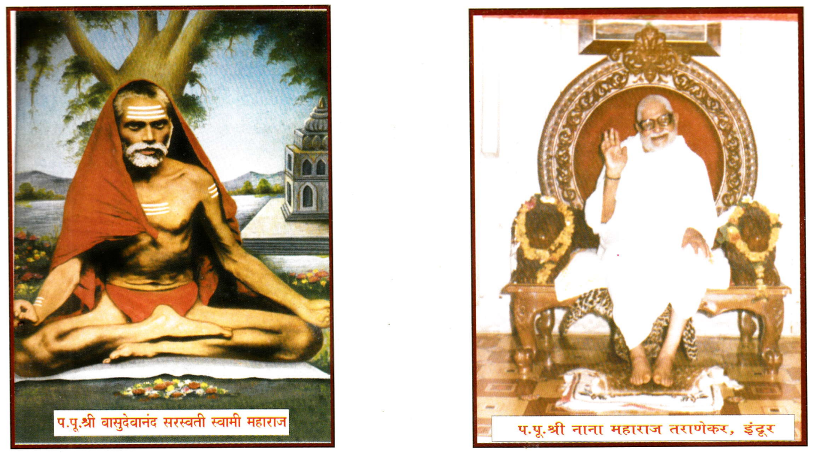

॥अथ श्री सप्तशती गुरुचरित्र प्रारम्भः॥
॥अध्याय १॥
॥ॐ श्रीगणेशाय नमः।
ॐ श्रीसद्गुरवे नमः।
ॐ श्री दत्तात्रेयाय नमः॥
नमः श्रीदत्तगुरवे हृद्वासोधौतिकारवे ।
स्वात्मज्योतिःप्रकाशाय सुखायानर्थशांतये ॥१॥
भूतं भव्यं भवच्चास्माज्जांयते येन जीवति ।
लीयते यत्र तद्ब्रह्म श्रीदत्ताख्यं त्र्यधीश्वरम् ॥२॥
भक्तिगम्यस्य तस्येदं चरितं चित्तशुद्धये ।
संक्षेपेण स्फुंट वक्ति वासुदेवानंदसरस्वती ॥३॥
ग्रंथीं वासुदेव निमित्त ।
कर्ता करविता दत्त ।
तत्पदीं ठेवोनि चित्त ।
चरित ऐकोत संत हे ॥४॥
हें मानुनि जे वाचिती ।
किंवा भक्तिनें ऐकती ।
तेचि भवाब्धि तरती ।
उद्धरति निजकुळा ॥५॥
मनावाचा अगोचर ।
तो स्वच्छंदें हो गोचर ।
कलियुगीं यतीश्वर ।
नरसिंहसरस्वती ॥६॥
त्याचें चरित्र ऐकून ।
नामधारक ब्राह्मण ।
गाणगापुरीं दर्शन ।
घ्यावें म्हणून पातला ॥७॥
प्राणी ऊष्मानें तापून ।
इच्छिती छाया जीवन ।
तैसा त्रितापें तापून ।
ये लक्षून निजजीवना ॥८॥
जो ऊर्ध्व खालीं भरल ।
आंत बाहेर सांचला ।
नामधारक म्हणे त्याला ।
दत्ता मला भेट देई ॥९॥
तूंचि मूर्तिमंत ब्रह्म ।
त्रिमूर्ति तूं गुरु परम ।
कलियुगीं मंगलधाम ।
भक्तकामपूरक ॥१०॥
विशाल तव सत्कीर्ती ।
परिसोनि केली विनंती ।
तव कर्णावरी न ये ती ।
वाटे खंती सर्वज्ञा हे ॥११॥
जरी मज तूं नेणसी ।
तरी सर्वज्ञ कीं होसी ।
किंवा मातें उपेक्षिसी ।
दयाळूसी साजे हें कीं ॥१२॥
मी अधःपाता जाईन ।
जरी देसी उपेक्षून ।
सेवा इच्छी कीं तव मन ।
तेणें होसी कीं दाता ॥१३॥
सेवा शान ठेवून ।
मेघापरी दे जीवन ।
पूर्वी जेवी दिल्हें दान ।
विभीषण ध्रुवादिकां ॥१४॥
किं मुख पसरितां ।
बाळपाशीं मागें माता ।
जरी बाळ मारी लाथा ।
तया माता टाकून दे कीं ॥१५॥
तूंची मम माता पिता ।
तूंची एक कुळदेवता ।
भिन्नभाव येथें नसतां ।
कोण दाता मज दुजा ॥१६॥
नरेश्वर सेवकवंशा ।
रक्षी न धरितां आशा ।
तूं अस्मत्पूर्वजेशा ।
सर्वेशा कीं उपेक्षिसी ॥१७॥
मी इत्यंभूत सर्व ।
कथितां ही नये द्रव ।
जेणे पाषाणा ये द्रव ।
तूं निर्द्रव होसी कैसा ॥१८॥
अशी प्रार्थना करुन ।
हो मूर्छित हें जाणून ।
दत्त चित्तीं प्रगटून ।
आश्वासन देयी स्वप्नी ॥१९॥
॥इति श्रीमत् परमहंस परिव्राजकाचार्य श्री वासुदेवानंदसरस्वती विरचिते श्री सप्तशती गुरूचरित्रे
चरितानुसंधानं नाम प्रथमोध्यायः ॥१॥(ओवी संख्या १९) ग्रंथ संख्या ॥१९॥
॥अध्याय २॥
॥ॐ श्रीगणेशाय नमः।
ॐ श्रीसद्गुरवे नमः।
ॐ श्री दत्तात्रेयाय नमः॥
ते पाहुन येरु उठे ।
तया पुढें सिद्ध भेटे ।
तया पुसे कोण तूं कोठें ।
जासी वाटे मायबाप ॥१॥
सिद्ध रम्य बोले वाचे ।
त्रिमूर्ति गुरु आमुचे ।
न देखती भक्त ज्याचे ।
तापदैन्याचे पसारे ॥२॥
ऐसे व्यक्त ऐकून ।
नामधारक बोले दीन ।
मी त्याचा भक्त असून ।
कां लोटून देई मला ॥३॥
विश्व यंत्र चालक दत्त ।
तेथें हा अस्थिरचित्त ।
हें जाणून बोले व्यक्त ।
सिद्ध मुक्तसंग जो ॥४॥
तूं स्वछंदे वागसी ।
व्यर्थ देवा दोष देसीं ।
कोप येतां इतरांसी ।
स्वभक्तांसीं राखी गुरु ॥५॥
एकदां तो कोपे जरी ।
न राखती हरहरी ।
येरु पुसे कवणेपरी ।
वद थोरीव गुरुची ॥६॥
म्हणे सिद्ध कलीप्रत ।
ब्रह्मा सांगे हे चरित ।
गोदावरीतीर स्थित ।
वेदधर्मशर्मा गुरु ॥७॥
तो स्वीय पातकान्त ।
करावया ये काशींत ।
तया दीपक सेवित ।
स्वयें कष्ट साहोनिया ॥८॥
सुहास्य मुखें सेवा करी ।
गुरु शिव्या देई मारी ।
न धरीं तें अंतरी ।
क्षालन करी मळमूत्र ॥९॥
अंध पंगु गलत्कुष्ठी ।
गुरु झाला महाकष्टी ।
शिष्या गांजी सेवेसाठीं ।
तरी करी सेवा शिष्य ॥१०॥
अपर्णापति हो प्रसन्न ।
शिष्या देयी वरदान ।
नाही गुर्वाज्ञा म्हणून ।
फिरवून धाडी शर्वा ॥११॥
त्याचा निश्चय जाणून ।
वर दे विष्णूही येऊन ।
शिष्य बोले सर्व दान ।
देईल पूर्ण गुरु माझा ॥१२॥
निश्चय त्याचा ओळखून ।
विष्णू भुक्तिमुक्तिदान ।
दे, गुरुही हो प्रसन्न ।
काय न्यून तया शिष्या ॥१३॥
हो अस्तंगत माया ।
गुरु प्रसन्न हो जया ।
भज सोडोनि संशया ।
करील दया त्रिमूर्ति हा ॥१४॥
॥इति श्रीमत् परमहंस परिव्राजकाचार्य श्री वासुदेवानंदसरस्वती विरचिते श्री सप्तशती गुरूचरित्रे
दीपकाख्यानं नाम द्वितीयोध्यायः ॥२॥(ओवी संख्या १४) ग्रंथ संख्या ॥३३॥
॥अध्याय ३॥
॥ॐ श्रीगणेशाय नमः।
ॐ श्रीसद्गुरवे नमः।
ॐ श्री दत्तात्रेयाय नमः॥
ऐसें वेदधर्माख्यान ।
नामधारक ऐकून ।
पुसे कां हा देव असून ।
अवतरुन ये येथें ॥१॥
कां घे दशावतार हे ।
सिद्ध म्हणे ऐक तूं हें ।
अंबरीषाकरितां हें ।
नटन आहे नारायणा ॥२॥
दुर्वास ऋषी द्वादशीसी ।
आला अंबरीषापाशीं ।
लावी विलंब कर्मासी ।
हो मानसीं खिन्न भूप ॥३॥
टळे वेळा हें जाणून ।
राजा करी जलपान ।
गर्भवासा जा म्हणून ।
दे कोपून ऋषी शाप ॥४॥
तेव्हां दयाळु येऊन ।
स्वयें शाप स्वीकारुन ।
अवतरे नारायण ।
जो असोन सर्वव्यापी ॥५॥
॥इति श्रीमत् परमहंस परिव्राजकाचार्य श्री वासुदेवानंदसरस्वती विरचिते श्री सप्तशती गुरूचरित्रे
अंबरीषोपाख्यानं नाम तृतीयोध्यायः ॥३॥(ओवी संख्या ५) ग्रंथ संख्या ॥३८॥
॥अध्याय ४॥
॥ॐ श्रीगणेशाय नमः।
ॐ श्रीसद्गुरवे नमः।
ॐ श्री दत्तात्रेयाय नमः॥
बहुवित् सिद्धा पुसे द्विज ।
अत्रि कोण सांग मज ।
त्रीश केवीं हो अत्रिज ।
सिद्ध गुज ऐक म्हणे ॥१॥
जाण अत्रि ब्रह्मपुत्र ।
अनसूया तत्कलत्र ।
दंपती परम पवित्र ।
त्यांचा पुत्र दत्तात्रेय ॥२॥
निर्बाध अनसूयेचे ।
व्रत पाहुन ते साचें ।
मन भ्यालें सर्व सुरांचें ।
अबोधाचें बीज हें कीं ॥३॥
ते निश्चोतत्धैर्य देव ।
त्रिमूर्तीपाशी घेती धांव ।
आश्वासोनीं त्यांतें देव ।
भिक्षुभाव स्वीकारिती ॥४॥
ते ऊर्ध्व लोक सोडुनी ।
भिक्षुकसे होवुनि ।
तिघे आले अत्रिसदनीं।
जातां रानीं मुनिवर्य ॥५॥
त्यां किंप्रयोजन ऐसें ।
अनसूया पुसतसे ।
नग्नभिक्षा दे तूं ऐसें ।
याचितसे देवत्रय ॥६॥
जरी सृती सोडिती ते ।
तरी सती वदे त्यातें ।
तसीच मी तुम्हा देते ।
स्वस्थचित्तें भिक्षा करा ॥७॥
स्वव्रताच्या सामर्थ्ये ती ।
अत्रिपदा चिंती चितीं ।
अतिथी बाळ कल्पुनी ती ।
सती नग्न होती झाली ॥८॥
सुदुस्तर ज्यांची माया ।
सहसा बालत्व ये तयां ।
तें पाहून अनसूया ।
विस्मया पावली ती ॥९॥
सुहास्यमुखी घे बालां ।
तंव स्तना पान्हा आला ।
पाजी एका एका बाला ।
जी विमला पातिव्रत्यें ॥१०॥
त्यांची शांत झालीं मनें ।
पतिव्रतास्तनपानें ।
पाळण्यांत घालुनि गाणें ।
ती प्रीतीनें गायी साध्वी ॥११॥
ती सुखानें गातां मुनि ।
तेव्हा आला वनांतुनि ।
ज्ञानें त्रिमूर्ति जाणुनी ।
स्तवुनी तोषवी त्याला ॥१२॥
त्यांचें गुज तें जाणुनि ।
राहिले सुत होउनि ।
निजरुपेंहि स्वस्थानीं ।
जाती तीनी देव हर्षे ॥१३॥
सगुणत्वा आले त्यांची ।
अत्रि नामें योजी साचीं ।
चन्द्र दत्त दुर्वासाचीं ।
ब्रह्म विष्णु महेश्वर ॥१४॥
चंद्र प्रणाम करुनी ।
चंद्रलोका गेला, मुनि ।
दुर्वासा फिरे भुवनीं ।
स्वसदनीं राहे दत्त ॥१५॥
तो निवृत्तिमार्ग दावी ।
भक्तांचे काम पुरवी ।
स्मर्तृगामी पुनः भुवि ।
अवतरे श्रीपादाख्य ॥१६॥
॥इति श्रीमत् परमहंस परिव्राजकाचार्य श्री वासुदेवानंदसरस्वती विरचिते श्री सप्तशती गुरूचरित्रे
अनसूयोपाख्यानं नाम चतुर्थोऽध्यायः ॥४॥।
(ओवी संख्या १६) ग्रंथ संख्या ॥५४॥
॥अध्याय ५॥
॥ॐ श्रीगणेशाय नमः।
ॐ श्रीसद्गुरवे नमः।
ॐ श्री दत्तात्रेयाय नमः॥
ये श्राद्धा ही विप्राघरीं ।
उत्तरदेशीं भिक्षा करी ।
श्राद्धापूर्वीं द्विजनारी ।
दान करी श्राद्धान्नाचें ॥१॥
दत्त विप्रस्त्रीचा भाव ।
पाहुनी सुत स्वयमेव ।
झाला श्रीपादराव ।
गृहभाव स्वीकारीना ॥२॥
विशेष विद्याभिन्न झाला ।
तात आरंभी विवाहाला ।
पुत्र म्हणे योगश्रीला ।
वरीं, अबला सर्व माता ॥३॥
निश्चय हा ते ऐकून ।
खिन्न होती त्यां दावून ।
त्रिमूर्तीरुप, आश्वासून ।
बंधू दोन पंग्वंध जे ॥४॥
करी प्रभू त्यांवरी डोळा ।
चालूं लागला पांगळा ।
पाहूं लागला आंधळा ।
अतर्क्य लीला श्रीपादाची ॥५॥
आशीर्वाद देई तयां ।
काशीपुरा जाऊनिया ।
बर्दयाश्रम पाहुनिया ।
श्रीपाद ये गोकर्णासी ॥६॥
विमलाः कीर्तयो यस्य ।
श्रीदत्तात्रेय एव सः ।
कलौ श्रीपादरुपेण ।
जयति स्वेष्टकामधुक् ॥७॥
॥इति श्रीमत् परमहंस परिव्राजकाचार्य श्री वासुदेवानंदसरस्वती विरचिते श्री सप्तशती गुरूचरित्रे
श्रीपादअवतारंकथनंनाम पंचमोऽध्यायः ॥५॥(ओवी संख्या ७) ग्रंथ संख्या ॥६१॥
॥अध्याय ६॥
॥ॐ श्रीगणेशाय नमः।
ॐ श्रीसद्गुरवे नमः।
ॐ श्री दत्तात्रेयाय नमः॥
कथा असी परिसून ।
नामधारक करी प्रश्न ।
म्हणे सर्व क्षेत्रें त्यजून ।
ये गोकर्णक्षेत्रीं कां हा ॥१॥
शैव धर्में रावणमाता ।
कैलासाची धरुनि चिंता ।
मृण्मयलिंग पूजितां ।
ये श्रीमत्ता सुता खेद ॥२॥
तो आश्चर्य मानून ।
म्हणे कैलास आणून ।
देतों, दे ही माती त्यजून ।
असें म्हणून चालिला ॥३॥
बळें मूळासह कैलासा ।
उचलितां हाले सहसा ।
भिवूनी गौरी वदे गिरिशा ।
प्रळय कसा हा वारी ॥४॥
तैं कैलासा चेपी हर ।
खालीं रगडे निशाचर ।
मरणोन्मुख हो करी स्तोत्र ।
तेणें हर प्रसन्न हो ॥५॥
त्वदन्य न मला त्राता ।
तूंचि माझा प्राणदाता ।
दयाळू तूं राखें आतां ।
असें म्हणतां सोडी शंभू ॥६॥
त्वां अनुमान न करितां ।
शिवा सोडविलें आतां ।
असें म्हणूनी तो गीता ।
गाता झाला सप्तस्वरें ॥७॥
गायी संम्यक् रागरागिणी ।
निजशिर छेदुनि ।
त्याचा वीणा करुनी ।
काल साधुनि प्रेमानें ॥८॥
शिव तयाच्या गाण्यासी ।
भुलोनी ये तयापाशीं ।
आत्मलिंग देउनि त्यासी ।
म्हणे होसि तूंचि शंभू ॥९॥
ये हाता अमरता ।
तीन वर्षें हें पूजितां ।
लंका कैलासचि ताता ।
होईल आतां निःसंशय ॥१०॥
अवनिवरी मध्यें जरी ।
ठेवितां न ये करीं ।
येणें परी नेई पुरीं ।
काय करिसी कैलासा ॥११॥
शिवा करुनी नमन ।
पुरा जाई रावण ।
त्वरें नारद जाऊन ।
करी कथन सर्व इंद्रा ॥१२॥
अधर्मा त्या जाणून ।
इंद्र ब्रम्ह्या दे सांगून ।
तोही विष्णूसी कथून ।
ये घेऊन शिवाप्रती ॥१३॥
त्या अनुचितकर्मे हर ।
पश्चात्तापें म्हणे विसर ।
पडला झाला पाव प्रहर ।
गेला क्रूर येथोनियां ॥१४॥
देव बंदींत पडले ।
विष्णू म्हणे तुज कळलें ।
तरी कां हें असें केलें ।
जड ठेलें पुढें मज ॥१५॥
जो आधी मारी जीव ।
तया केला चिरंजीव ।
वरदान सांगे शिव ।
म्हणे उपाय करीं तूं ॥१६॥
ऐसें निगुती ऐकून ।
नारदा दे पाठवून ।
विष्णू करावया विघ्न ।
धाडी विघ्न नायकातें ॥१७॥
मुनी मनोवेगें तया ।
गांठुनि लोटी काळ वायां ।
धाडी संध्या करावया ।
गणराया तव आला ॥१८॥
त्या मानुनी ब्रह्मचारी ।
तो न घेतां त्याचे करीं ।
रावण दे लिंग तरी ।
अवधारी म्हणे बटू ॥१९॥
स्वपोष्य मी अतिदीन ।
तीन वार बोलावीन ।
जड होतां खालीं ठेवीन ।
दोष ने मग मला ॥२०॥
स्वर्गलोकीं सुर पाहतां ।
बोलावी त्या अर्घ्य देतां ।
तीन वेळ तो न येतां ।
तो स्थापिता झाला लिंग ॥२१॥
त्यानें केलें तें स्थापन ।
रावणा न हाले म्हणून ।
महाबळी हो गोकर्ण ।
क्षेत्र जाण भूकैलास ॥२२॥
॥इति श्रीमत् परमहंस परिव्राजकाचार्य श्री वासुदेवानंदसरस्वती विरचिते श्री सप्तशती गुरूचरित्रे
गोकर्णमहाबळेश्वरप्रतिष्ठापनं नाम षष्ठोऽध्यायः ॥।६॥(ओवी संख्या २२) ग्रंथ संख्या ॥८३॥
॥अध्याय ७॥
॥ॐ श्रीगणेशाय नमः।
ॐ श्रीसद्गुरवे नमः।
ॐ श्री दत्तात्रेयाय नमः॥
होता नरपती एक ।
मित्रसह तत्सेवक ।
श्राद्धीं नृमांस दे ठक ।
वसिष्ठादिक ऋषींसी ॥१॥
ऋषी रुसे देयी शाप ।
ब्रह्मराक्षस हो भूप ।
विप्रा मारी तत्स्त्री शाप ।
दे स्त्रीसंपर्के मरसी ॥२॥
तो भूप बारा साल ।
जातां प्राग्वत् हो विमल ।
सांगे राणीसी सकल ।
शापबोल ब्राह्मणीचा ॥३॥
दुःखें मरुं इच्छी राणी ।
राजा तिला सांवरोनी ।
केलें पाप सांगोनी ।
तारा म्हणूनी प्रार्थी विप्रा ॥४॥
मनस्येकं वचस्येकं ।
असा नोहे हा सेवक ।
हें जाणोनी द्विज लोक ।
सांगे सम्यक् तीर्थयात्रा ॥५॥
ब्रह्महत्या न जाय ती ।
मग भूपा वाटे भीती ।
मिथिलापुरीं महामती ।
सांगे खंती गौतमाते ॥६॥
मुनीं तया आश्वासून ।
सांगे क्षेत्र गोकर्ण ।
तेथें दोष निवारुन ।
तूं पावन होशील बा ॥७॥
ऐक थोडेसें आख्यान ।
म्यां देखिलें तें सांगेन ।
शिवदूत येती धांवून ।
चंडाळी मरतां एक ॥८॥
हर्ष पाहतां हो तयां ।
म्यां पुसतां, करुनी दया ।
ते सांगती मातें राया ।
विप्रजाया प्राग्जन्मीं हे ॥९॥
ही बालविधवा झाली ।
जारकर्मी रमली ।
स्वजनांनीं सोडिली ।
व्यक्त झाली वैश्यकांता ॥१०॥
असभ्य संगें दुष्ट ।
जारकर्में झाली भ्रष्ट ।
मद्यमांसें झाली पुष्ट ।
नेणे कष्ट पुढील ती ॥११॥
मत्ता ते मेष म्हणून ।
गोवत्सा खायी मारुन ।
दुजे दिनी शिर पाहून ।
शिव म्हणून छपवी तें ॥१२॥
असी नांदता ती मेली ।
गोवघें हो चंडाळी ।
अविचारें हो आंधळी ।
व्रणे झाली जारकर्में ॥१३॥
असी तोकपणें झाली ।
मायबापें रक्षियेली ।
लवकर तेही मेलीं ।
पोरी झाली निराश्रय ॥१४॥
ती जन संयोगेशीं ।
आली गोकर्णक्षेत्रासी ।
वस्त्रहीन उपवासी ।
व्रतदिवशी मागे अन्न ॥१५॥
ती याचावया कर ।
पुढें करी, कोणी नर ।
करीं टाकी बिल्वपत्र ।
टाकी दूर हुंगोनी ती ॥१६॥
पडे दिष्टें लिंगावर ।
तेणें तुष्टे गौरीवर ।
करी इला भवपार ।
धाडी शीघ्र आम्हां येथें ॥१७॥
पुनर्नजन्मेल ही ।
म्हणोनियां नेली त्यांहीं ।
गौतम म्हणे तूंही ।
नृपा पाहीं गोकर्णातें ॥१८॥
नृप चमत्कार मानून ।
जातांची हो पांवन ।
तेथ साक्षाच्छिव जाण ।
म्हणोन ये श्रीपाद ॥१९॥
॥इति श्रीमत् परमहंस परिव्राजकाचार्य श्री वासुदेवानंदसरस्वती विरचिते श्री सप्तशती गुरूचरित्रे
गोकर्णक्षेत्रवर्णनं नाम सप्तमोऽध्यायः ॥७॥(ओवी संख्या १९) ग्रंथ संख्या ॥१०२॥
॥अध्याय ८॥
॥ॐ श्रीगणेशाय नमः।
ॐ श्रीसद्गुरवे नमः।
ॐ श्री दत्तात्रेयाय नमः॥
सिद्ध संक्षेपें सांगत ।
श्रीपाद तेथूनि येत ।
कृष्णातीरीं होयी स्थित ।
कुरुपुरांत तारक ॥१॥
मूर्ख प्रजासमवेत ।
लोकनिंदेनें हो त्रस्त ।
जीव द्याया कृष्णेंत ।
आकस्मात देखे देव ॥२॥
प्रभू तिला निरोपिती ।
आत्महत्या दुस्तर म्हणती ।
जन्मांतरीं सुपुत्राप्ती ।
व्हाया प्रार्थी मग ती नारी ॥३॥
तन्निष्ठा ओळखून ।
गुरु सांगती आख्यान ।
उज्जनींत चंद्रसेन ।
शिवार्चन करी प्रदोषीं ॥४॥
त्याचा अमूल्य सन्मणी ।
हराया नृप तत्क्षणीं ।
घेवोनी अक्षौहिणी ।
उज्जनी वेढिते ते ॥५॥
हस्त्यश्वरथपती ।
पाहोनी न भी चित्तीं ।
शिवा पूजी तो भूपती ।
तें देखती गोपपुत्र ॥६॥
अश्वत्थ संनिधानीं ।
अंगणी ते पाषाणीं ।
पूजिती, त्यां नेती जननी ।
पूजनीं रमे एक बाळ ॥७॥
राहे मेळा जातां एकला ।
पूजा लोटुनि माता त्याला ।
ओढी तो मूर्छित पडला ।
शिव त्याला दे सायुज्ज ॥८॥
पुढें नंदस्त्री होऊन ।
माता लाहे कृष्णनंदन ।
ज्योतिर्लिंग तें देखून ।
द्वेष सोडून जाती राजे ॥९॥
पुढें सुत व्हावा तरी ।
शनिप्रदोष तूं करीं ।
येरु म्हणे तुम्हासरी ।
जन्मांतरी पुत्र व्हावा ॥१०॥
जो भाविकां देई वर ।
तथा म्हणूनी शिरावर ।
मूर्खपुत्राच्या धरी कर ।
विद्वद्वर तो जाहला ॥११॥
ती करुनी प्रदोषपूजा ।
पुढें झाली विप्रात्मजा ।
स्वसमांन नाहीं दुजा ।
म्हणूनीं हो तस्तुत दत्त ॥१२॥
॥इति श्रीमत् परमहंस परिव्राजकाचार्य श्री वासुदेवानंदसरस्वती विरचिते श्री सप्तशती गुरूचरित्रे
शनिप्रदोषव्रतकथनं नाम अष्टमोऽध्यायः ॥८॥।
(ओवी संख्या १२) ग्रंथ संख्या ॥११४॥
॥अध्याय ९॥
॥ॐ श्रीगणेशाय नमः।
ॐ श्रीसद्गुरवे नमः।
ॐ श्री दत्तात्रेयाय नमः॥
सुरुढभक्ती एक ।
श्रीपादाचा सेवक ।
होता जातीचा रजक ।
नित्य एकभावें वंदी ॥१॥
तो नमूनी त्या गुरुवर्या ।
वस्त्रें धूतां भूपैश्वर्या ।
देखे इच्छी स्वयें तथा ।
गुरुराया तें जाणत ॥२॥
त्या बोलती तूं भक्ता ।
सुखें राज्य करीं आतां ।
पुढें देऊं कीं वद आता ।
तो म्हणे झालो वृद्ध ॥३॥
पुढें मला द्या यौवनीं ।
असो तुझी स्मृती मनीं ।
गुरु बोले म्लेंच्छसदनीं ।
राजा होसी अंती भेटूं ॥४॥
॥इति श्रीमत् परमहंस परिव्राजकाचार्य श्री वासुदेवानंदसरस्वती विरचिते श्री सप्तशती गुरूचरित्रे
रजकवरप्रदानं नाम नवमोऽध्यायः ॥।९॥(ओवी संख्या ४) ग्रंथ संख्या ॥११८॥
॥अध्याय १०॥
॥ॐ श्रीगणेशाय नमः।
ॐ श्रीसद्गुरवे नमः।
ॐ श्री दत्तात्रेयाय नमः॥
सत्यसंकल्प दे तसें ।
स्वयें अवतरतसे ।
कुरुपुरीं भेटतसे ।
ऐक असे विप्र एक ॥१॥
करी गरीब तो व्यापार ।
लाहे नवसें द्रव्य फार ।
यात्रे जातां मार्गी चोर ।
तया ठार मारिती ॥२॥
श्रीश शस्त्रें मारी चोरां ।
जीववी द्विजवरा ।
राखी एका सभ्य चोरा ।
स्वयें गुप्त हो श्रीपाद ॥३॥
ते शस्त्रे मेले त्यांतें ।
द्विज जाणोनी धनांतें ।
घेऊनी ये कुरुपुरातें ।
दें नवस हो कृतार्थ ॥४॥
॥इति श्रीमत् परमहंस परिव्राजकाचार्य श्री वासुदेवानंदसरस्वती विरचिते श्री सप्तशती गुरूचरित्रे
मृतविप्रसंजीवनंनाम दशमोऽध्यायः ॥१०॥।
(ओवी संख्या ४) ग्रंथ संख्या ॥१२२॥
॥अध्याय ११॥
॥ॐ श्रीगणेशाय नमः।
ॐ श्रीसद्गुरवे नमः।
ॐ श्री दत्तात्रेयाय नमः॥
ब्राह्मण स्त्री करंजपुरीं ।
हो अंबारव्या सुंदरी ।
प्राक्संस्कारें प्रदोष करी ।
तिला वरी माधव विप्र ॥१॥
झाली दृढधी गर्भिणी ।
बोले तत्वज्ञान जनीं ।
शोभली ती संस्कारानीं ।
शुभलग्नीं प्रसवली ॥२॥
तो पढें बाळ ओंकार ।
पिता करी तत्संस्कार ।
होती सर्व हृष्टतर ।
अवतार हा म्हणती ॥३॥
करुन नामकर्मा ।
नाम घेती नृहरिशर्मा ।
पिता वेंची धन धर्मा ।
चित्र नर्मा दावी बाळ ॥४॥
न इच्छि शिंशु बोलाया ।
तया मूक मानूनियां ।
ते करितीं बहु उपाया ।
शिशु तयां दावी खुणा ॥५॥
मूकत्वा टाकी तेव्हां ।
बांधाल मुंजी जेव्हां ।
असें म्हणूनी करी तेव्हां ।
बाल लोहाचें सुवर्ण ॥६॥
बोल तयाचा मानून ।
करिती व्रतबंधन ।
मातेपाशीं भिक्षा दान ।
मागे तीन वेद पढे ॥७॥
जैं प्रातःकाल येतां ।
अंधःकार जाय अस्ता ।
तेवीं बाळें वेद पढतां ।
मर्त्यताधी लोपली ॥८॥
सर्वां परम हर्ष झाला ।
बटू प्रार्थी मातेला ।
स्वीकारुं संन्यासाला ।
होती तुला पुत्र पुत्री ॥९॥
माता दंभोलीपातसे ।
ऐकतांची पडतसे ।
सांवरोनी बोलतसे ।
क्रम असे संन्यासासी ॥१०॥
वेदांत ब्रह्मचर्यादि ।
क्रम असे नच आधीं ।
अन्यथा पडे मधीं ।
पुत्र सुधी ऐक म्हणे ॥११॥
॥इति श्रीमत् परमहंस परिव्राजकाचार्य श्री वासुदेवानंदसरस्वती विरचिते श्री सप्तशती गुरूचरित्रे
नृसिंहावतारो नाम एकादशोऽध्यायः ॥११॥।
(ओवी संख्या ११) ग्रंथ संख्या ॥१३३॥
॥अध्याय १२॥
॥ॐ श्रीगणेशाय नमः।
ॐ श्रीसद्गुरवे नमः।
ॐ श्री दत्तात्रेयाय नमः॥
सच्चित्परब्रह्म श्रवणा ।
न्यास हेतू तत्कारण ।
वैराग्य न क्रम जाण ।
आळस न कीजे येथ ॥१॥
कां वारिसी तूं मज ।
आयुष्य जेवीं वीज ।
क्षणभंगुर देह तुज ।
कळे सहज मृत्यू न कीं ॥२॥
येथ मानवांची काय ।
कथा मृत्यू देवां खाय ।
न ये गेलेलें आयुष्य ।
न कळे काय केव्हां पडे ॥३॥
सन्मार्गि न करीं विघ्न ।
सुपुत्रा तूं होसी म्हणून ।
मस्तकीं हस्त ठेऊन ।
पूर्वस्मरण तिला देई ॥४॥
म्हणे तनया श्रीपदा तूं ।
एक पुत्र होतां जा तूं ।
सुत म्हणे पुरतां हेतू ।
आज्ञा दे तूं म्हणूनी राहे ॥५॥
ज्यांचे व्यंग अध्ययन ।
जे म्हणविती प्राज्ञ ।
तेही त्यापाशीं येवून ।
अध्ययन करिती नित्य ॥६॥
ती माय गर्भिणी झाली ।
पुत्र दोन प्रसवली ।
त्या बाळें आज्ञा घेतली ।
वाढ धरिलीं काशीची ॥७॥
तो सस्मित बोले तयां ।
पुनः भेटें म्हणुनिया ।
काशीमध्यें येवोनियां ।
धरी धैर्या करी योग ॥८॥
महान्गतस्मय जाणून ।
न्यासमार्ग स्थापीं म्हणून ।
विप्रें प्रार्थितां तो प्राज्ञ ।
स्वयें संन्यासी होतसे ॥९॥
जो होता तेथें यती ।
वृद्ध कृष्णसरस्वती ।
तया वरुनी गुरु होती ।
नरसिंहसरस्वती ॥१०॥
होऊन नर आपण ।
गुरुचे गुरु असून ।
रामकृष्णापरी जाण ।
गुरु करुन घेती गुरु ॥११॥
स्थापूनि श्रौंतधर्म ।
फिरे सर्व तीर्थाश्रम ।
माधवा दे आश्रम ।
वळे जन्मभूमीकडे ॥१२॥
॥इति श्रीमत् परमहंस परिव्राजकाचार्य श्री वासुदेवानंदसरस्वती विरचिते श्री सप्तशती गुरूचरित्रे
संन्यासदीक्षाग्रहणं नाम द्वादशोऽध्यायः॥१२॥(ओवी संख्या १२) ग्रंथ संख्या ॥१४५॥
॥अध्याय १३॥
॥ॐ श्रीगणेशाय नमः।
ॐ श्रीसद्गुरवे नमः।
ॐ श्री दत्तात्रेयाय नमः॥
बाळवर्य ज्ञानज्योति ।
कृष्णमाधवसरस्वती ।
सदानंदोपेंद्रयती ।
सातवा मी हे मुख्य शिष्य ॥१॥
अधूर्त सर्व शांत ।
गुरु ऐशां शिष्यांसहित ।
आले जन्मभूमीप्रत ।
हो माताही यतिवंद्या ॥२॥
विनन्ति करुनी नर ।
विश्वरुपा घरोघर ।
न्हेती देती गुरुवर ।
परपार मायबापां ॥३॥
तो प्रभू म्हणे भगिनीला ।
दंपतीभेद केला ।
त्वां लातिलें हो धेनूला ।
पती त्यजील कुष्ठी होसी ॥४॥
ते भूयः प्रार्थितां म्हणती ।
वृद्धत्वीं पति हो यति ।
कुष्ठाची करीन शांति ।
स्त्रियां पति गती न अन्य ॥५॥
असें तये वेळीं तिला ।
सांगोन शिष्यमेळा ।
घेवोनि ये गोदावरीला ।
भूगोला उद्धरी जो ॥६॥
शिष्य मेळवी आणिक ।
माधवारण्यसंज्ञक ।
ज्ञान देउनी सम्यक् ।
विशोक केला गुरुनें ॥७॥
गुरुवर्य पुढें येती ।
तेथ एका विप्रा पाहती ।
मराया ये गोदेप्रति ।
दगड पोटीं बांधोनिया ॥८॥
तयाचा तो जाणून भाव ।
शिष्यां म्हणती घ्यारे धांव ।
शिष्यें घेवोनिया धांव ।
तयास जवळ आणिला ॥९॥
तो साद्यंत पुसतां वदे ।
शूलपीडित मी प्राण दें ।
कुकर्मं केले पूर्वीं मदें ।
त्याचें फल दे देव हें की ॥१०॥
नाहीं पुण्य पूर्वापार ।
मी झालों भूमीभार ।
गुरु म्हणती अनिवार ।
दोष फार आत्मघातें ॥११॥
तूं मरु नको रोगावर ।
औषध देतों मी शीघ्र ।
ऐसें म्हणती गुरुवर ।
तवं ये विप्र सायंदेव ॥१२॥
तो तोषवी श्रीरुसी ।
म्हणे द्विजमी कांचीवासी ।
गुरु म्हणती हा उपवासी ।
या द्विजासी जेवूं घालीं ॥१३॥
हें साम्प्रत करी काज ।
सायंदेव म्हणे हा द्विज ।
अन्नवैरी झाला आज ।
दोष ये मज हा मरतां ॥१४॥
अपूप दे म्हणती तया ।
तें मानून गुरुराया ।
भिक्षेला ने प्रार्थुनियां ।
द्विज शिष्यांसमवेत ॥१५॥
धू पाद्ये गुरुचे पाद ।
पूजी विधीनें वंदी पाद ।
जेववी सर्वां हो सानंद ।
झाला विगद तोही विप्र ॥१६॥
॥इति श्रीमत् परमहंस परिव्राजकाचार्य श्री वासुदेवानंदसरस्वती विरचिते श्री सप्तशती गुरूचरित्रे
विप्रशूलहरणं नाम त्रयोदशोऽध्यायः ॥१३।
(ओवी संख्या १६) ग्रंथ संख्या ॥१६१॥
॥अध्याय १४॥
॥ॐ श्रीगणेशाय नमः।
ॐ श्रीसद्गुरवे नमः।
ॐ श्री दत्तात्रेयाय नमः॥
तो सायन्देव म्हणे ।
म्लेच्छराजा माझें जिणें ।
हरील वाटे आजी त्याणें ।
बोलावणें केलें आहे ॥१॥
मीं अतःपर न डरें।
गुरु म्हणती तूं जा त्वरें ।
परतवील तो सत्कारें ।
म्हणूनी करें आश्वासिती ॥२॥
हाची प्रसाद म्हणून ।
सायंदेव जातां यवन ।
मृतप्राय हो भिवून ।
गौरवूत त्या बोळवी ॥३॥
वंशवृद्धी निजभक्ती ।
गुरु देवून पुनः भेटी ।
सायंदेवा देवूं म्हणती ।
गुप्त होती पुढें स्वयें ॥४॥
निवृत्तिः श्रीगुरुपदैः ।
सर्वत्रात्र प्रकाशिता ।
प्रस्थाप्य तीर्थयात्रायै ।
स्वन्गृहीताऽप्रकाशिता ॥५॥
॥इति श्रीमत् परमहंस परिव्राजकाचार्य श्री वासुदेवानंदसरस्वती विरचिते श्री सप्तशती गुरूचरित्रे
सायंदेववरप्रदानं नाम चतुर्दशोऽध्यायः॥१४॥।
(ओवी संख्या ५) ग्रंथ संख्या ॥१६६॥
॥अध्याय १५॥
॥ॐ श्रीगणेशाय नमः।
ॐ श्रीसद्गुरवे नमः।
ॐ श्री दत्तात्रेयाय नमः॥
शिष्यांप्रति गुरु म्हणती ।
तीर्थें हिंडा सर्वक्षिती ।
भेटूं श्रीशैलावरती ।
ते म्हणती दवडूं नका ॥१॥
ते संसृतिहर पाद ।
हेची सर्वतीर्थास्पद ।
गुरु म्हणती निर्विवाद ।
चला खेद सोडूनियां ॥२॥
वाक्य तादृश तें ऐकूनी ।
भावें शिरसा मानुनी ।
म्हणती जावे कोण्या स्थानीं ।
तें ऐकूनी गुरु बोले ॥३॥
सात पुरी धाम चार ।
बारा ज्योतिर्लिंगें थोर ।
आचरतां बहु कृच्छ्र ।
फळ हो दूर जाय पाप ॥४॥
आचारावें तीर्थी क्षौर ।
जसा असे स्वाधिकार ।
तसा श्राद्धादिप्रकार ।
करितां दूर नसे क्षेम ॥५॥
जे कोणी जितुके गाव ।
तीर्था जाती ठेवूनि भाव ।
तितुके कृच्छ्रफळ अपूर्व ।
तरती पूर्वज तयांचे ॥६॥
पाहुनि नदीसंगम ।
न्हातां पुण्य उत्तम ।
ऋतु निवर्ततां ग्रीष्म ।
तीर्थधाम विटाळे ॥७॥
स्वधर्मानें आठ मास ।
फिरा ठरा चार मास ।
नवें जळ ये नदीस ।
दहा दिवस ये विटाळ ॥८॥
दोष नच तीरस्थांसी ।
तीन दिन महानदीसी ।
अहोरात्र र्हदकूपासी ।
करा ऐसी यात्रा तुम्हीं ॥९॥
पाप मोचन होयी ज्ञान ।
वर्ष येतां बहुधान्य ।
श्रीशैलावर मी भेटेन ।
तथास्तु म्हणून ते गेले ॥१०॥
॥इति श्रीमत् परमहंस परिव्राजकाचार्य श्री वासुदेवानंदसरस्वती विरचिते श्री सप्तशती गुरूचरित्र
तीर्थयात्रानिरूपणं नाम पंचदशोऽध्यायः ॥१५॥(ओवी संख्या १०) ग्रंथ संख्या ॥१७६।
॥अध्याय १६॥
॥ॐ श्रीगणेशाय नमः।
ॐ श्रीसद्गुरवे नमः।
ॐ श्री दत्तात्रेयाय नमः॥
तो महात्मा लोटुनी शिष्यां ।
स्वयें कोठें राहोनियां ।
काय करी असे तया ।
विप्रें पुसतां सिद्ध सांगे ॥
सवें जितात्मा मी एक ।
वैजनाथीं गुरुनायक ।
असतां विप्र आला एक ।
सांगे दुःख गुरुनें दिल्हें ॥२॥
गुरु तया धिक्कारुन ।
म्हणती तूं रे जा यथोन ।
येरु धरुनियां चरण ।
गुरुसेवन सांगा म्हणे ॥३॥
गुरु संतोषें बोलती ।
ब्रह्माविष्णूशिवमूर्ति ।
गुरु ब्रह्म साक्षात् म्हणती ।
भक्तां देती ते सर्वार्थ ॥४॥
सेवा गहन वाटे तरी ।
गुरु आपुल्या शिष्या तारी ।
कथा झाली हे द्वापारीं ।
अवधारी मी सांगतो ॥५॥
धौम्य दोषज्ञ गुरु भला ।
तिघे शिष्य होते त्याला ।
कठिण सेवा सांगे त्याला ।
न वेदांसी सांगे पूर्वी ॥६॥
विशेषार्थ न सांगती ।
हृच्छुघ्यर्थ सेवा घेती ।
वळखूनी प्रसन्न होती ।
रहाटी ऐसी गुरुची हे ॥७॥
धौम्य अशा रीती शिष्या ।
अरुणा म्हणे शेतीं तोया ।
न्हेयी म्हणतां तो न्हे तोया ।
तें न जाय शेताकडे ॥८॥
मनीं ध्यायी गुरुपद ।
जलामध्यें पडे सानंद ।
जळ क्षेत्रीं ये स्वच्छंद ।
गुरु प्रसाद करी तेव्हां ॥९॥
अध्यात्म ज्ञानी तो झाला ।
तया गेहा पाठविला ।
धौम्य सांगे बैदाला ।
ह्या शेताला यत्नें राखीं ॥१०॥
राखोनि तो मळी धान ।
गुरुला ते दे सांगून ।
गाडा रेडा एक देऊन ।
म्हणे आण धान्य घरीं॥११॥
गाडा त्या धान्ये भरुन ।
आणिता पंकी तो गढून ।
गेला तव गुरु येवून ।
त्या काढून प्रसन्न हो ॥१२॥
सर्व विद्या आल्या त्याला ।
तया गेहीं पाठविला ।
गुरु म्हणे उपमन्यूला ।
तूं धेनूला वनी चारीं ॥१३॥
नेवोनि तो गुरें रानीं ।
चरवी तेथें भिक्षा करुनी ।
गुरु मागे तें जाणुनी ।
भिक्षा आणुनि दे ती मला ॥१४॥
द्विरावृत्ती भिक्षा करी ।
शिष्य एक देई घरीं ।
तें जाणुनी गुरु दुसरी ।
भिक्षा घरीं देई म्हणे ॥१५॥
दुश्चित्त तो नच होई ।
दोनी भिक्षा घरीं देई ।
वस्तोच्छिष्टपय घेई ।
गुरुमायी वारी तया ॥१६॥
तो अर्काचें क्षीर पीतां ।
होई अंध कूपी पडतां ।
कृपा आली गुरुनाथा ।
दृष्टी देता झाला मंत्रें ॥१७॥
सत्कामाः फलंतु ते ।
असें म्हणुनि धाडी त्यातें ।
तो हो कृतार्थ कीर्तीते ।
तच्छिष्यें मिरविली ॥१८॥
जगद्वंद्य शिष्य झाला ।
सतक्षकेंद्र पाडिला ।
गुरुतोषाची ही कला ।
जा तूं गुरुला पुनः सेवीं ॥१९॥
तो तद्वैरें अनुतापाला ।
मग तारिती गुरु त्याला ।
आले भिल्लवाडीला ।
वास केला चार मास ॥२०॥
॥इति श्रीमत् परमहंस परिव्राजकाचार्य श्री वासुदेवानंदसरस्वती विरचिते श्री सप्तशती गुरूचरित्रे
शिष्यत्रयाख्यानं नाम षोडशोऽध्यायः॥१६॥(ओवी संख्या २०) ग्रंथ संख्या ॥१९६॥
॥अध्याय १७॥
॥ॐ श्रीगणेशाय नमः।
ॐ श्रीसद्गुरवे नमः।
ॐ श्री दत्तात्रेयाय नमः॥
जे चर्वित चर्वणसे ।
विषय भोगिताति पिसे ।
तारावया तया असें ।
करीतसे गुरु कर्म ॥१॥
विप्र मुख्याचा सुत एक ।
कोल्हापुरी होता मूर्ख ।
पशु म्हणती सर्व लोक ।
निंदिती दुःख वाटे त्यातें ॥२॥
विरक्ता परी तो येवून ।
भुवनेश्वरीसी प्रार्थून ।
न होता ती सुप्रसन्न ।
जिव्हा छेदून देतसे ॥३॥
शिरस्सुमन द्याया चिंती ।
देवी धाडी त्या गुरुप्रति ।
गुरु जिव्हा देती करिती ।
सुमती जाती गुरुपुढें ॥४॥
॥इति श्रीमत् परमहंस परिव्राजकाचार्य श्री वासुदेवानंदसरस्वती विरचिते श्री सप्तशती गुरूचरित्रे
छिन्नजिव्हादानं नाम सप्तदशोऽध्यायः॥१७॥(ओवी संख्या ४) ग्रंथ संख्या ॥२००॥
॥अध्याय १८॥
॥ॐ श्रीगणेशाय नमः।
ॐ श्रीसद्गुरवे नमः।
ॐ श्री दत्तात्रेयाय नमः॥
सुरेख क्षेत्र गुरु पाहे ।
कृष्णा पंचगंगा वाहे ।
तेथें द्वादशाब्द राहे ।
अजुनी आहे तेथें गुप्त ॥१॥
तेथें दुःखि विप्राघरीं ।
गुरु शाकभिक्षा करी ।
घेवडा वेल तोडी करीं ।
ब्राह्मणी करी दुःख तेव्हां ॥२॥
तद्दुःख हरावया ।
वेलातळीं देई तयां ।
धनकुंभ गुरुराया ।
म्हणे तयां, न प्रगटा हे ॥३॥
॥इति श्रीमत् परमहंस परिव्राजकाचार्य श्री वासुदेवानंदसरस्वती विरचिते श्री सप्तशती गुरूचरित्र
धनकुंभप्रदानं नाम अष्टादशोऽध्यायः ॥१८॥(ओवी संख्या ३) ग्रंथ संख्या ॥२०३॥
॥अध्याय १९॥
॥ॐ श्रीगणेशाय नमः।
ॐ श्रीसद्गुरवे नमः।
ॐ श्री दत्तात्रेयाय नमः॥
हो हा संन्यासी म्हणून ।
भिक्षा मागे शिव आपण ।
हिरण्यकशिपु दारण ।
करितां नखें तापलीं ॥१॥
जो विज्ञैकगम्य हरि ।
तो श्रीदत्त औदुंबरीं ।
शांत होतां तयावरी ।
वास करी श्रीसहित ॥२॥
दे मार्ग कृष्णा तया ।
द्वीपीं राहे योगिनी तया ।
भिक्षा देती पूजूनियां ।
नेणूनिया विप्र म्हणती ॥३॥
न स्वछंदी गांवीं जायीं ।
पाहूं येथें काय खायी ।
ऐसें म्हणुनि ते ठायीं ।
राहता येयी भय त्याला ॥४॥
तत्रत्य नर गंगानुज ।
भावें आला त्या गुरुराज ।
दाखवूनी तेथील गुज ।
देती निजप्रीती वर ॥५॥
तो नमूनी त्रिस्थली पुसे ।
क्षणें गुरु दावितसे ।
गुरु जाऊं म्हणतसे ।
दुःख होतसे योगिनीसी ॥६॥
न गूढाः केपि में चेष्टा ।
विदुरित्येष पादुके ।
विन्यस्याश्र्वास्य ताः प्राप ।
श्रीगुरुर्गाणगापुरुम् ॥७॥
॥इति श्रीमत् परमहंस परिव्राजकाचार्य श्री वासुदेवानंदसरस्वती विरचिते श्री सप्तशती गुरूचरित्रे
योगिनीवरदानं नाम एकोनविंशोऽध्यायः ॥१९॥।
(ओवी संख्या ७) ग्रंथ संख्या ॥२१०॥
॥अध्याय २०॥
॥ॐ श्रीगणेशाय नमः।
ॐ श्रीसद्गुरवे नमः।
ॐ श्री दत्तात्रेयाय नमः॥
ऐसें परिसुनी विप्र ।
म्हणे तेथें कोणा वर ।
लाधला बोला सविस्तर ।
ऐकें उत्तर सिद्ध म्हणे ॥१॥
एक दशग्रंथी विप्र ।
शिरोळग्रामीं मृतपुत्र ।
तद्भार्येसी एक विप्र ।
सांगे उग्रकर्मविपाक ॥२॥
त्वां ब्रह्मस्वशत घेतलें ।
तया पिशाचत्व आलें ।
त्याणें तुझे सुत मारिले ।
कर्म केलें पाहिजे त्याचें ॥३॥
दे द्रव्य तद्गोत्रासी ।
सेवीं मास एक गुरुसी ।
येरु म्हणे न मजपाशीं ।
द्रव्य गुरुसी सेवीं भावें ॥४॥
अभयंकर रक्षु ऐसें ।
म्हणूनी सेवितसे ।
स्वप्नीं भूत मारीतसे ।
राखीतसे गुरु तिसी ॥५॥
सांगे तत् परिहार जसा ।
जागेंपणें करी तसा ।
तेणें मुक्त झाला पिसा ।
गुरु प्रसाद दे तिला ॥६॥
ती दोन पुत्र प्रसवे ।
ते दोघे दिसती बरवें ।
थोर होतां व्रत करावें ।
म्हणुनी वेचिती ते द्रव्य ॥७॥
श्रेष्ठ तनयाचें व्रत ।
आरंभिता धनुर्वात ।
होवोनि तो वांकत ।
सन्निपात न शमें यत्नें ॥८॥
तो तद्भावें फिरवी नेत्र ।
मरे होतां अर्धरात्र ।
माता रडे, पिटी गात्र ।
बोधमात्र नायके ती ॥९॥
दिवस मध्यान्हीही येतां ।
जाळाया ती न दे प्रेता ।
ब्रह्मचारी स्पष्टवक्ता ।
तेथें येतां झाला तेव्हां ॥१०॥
॥इति श्रीमत् परमहंस परिव्राजकाचार्य श्री वासुदेवानंदसरस्वती विरचिते श्री सप्तशती गुरूचरित्रे
समंधपरिहारो नाम विंशोऽध्यायः ॥२०॥(ओवी संख्या १०) ग्रंथ संख्या ॥२२०॥
॥अध्याय २१॥
॥ॐ श्रीगणेशाय नमः।
ॐ श्रीसद्गुरवे नमः।
ॐ श्री दत्तात्रेयाय नमः॥
तो होय गुरुनाथ ।
तियेप्रति सांगे हित ।
कोण कोणाचा हो सुत ।
वद ज्ञात असे तर ॥१॥
पृथ्व्यप्तेजोवाताकाश ।
हेच आले आकारास ।
मायामय संबंधास ।
तूंचि खास रडशी कीं ॥२॥
जरी सूनू तुझा हाची ।
पूर्वापर असे साची ।
सांग कथा प्राग्जन्माची ।
तूं कोणाची स्त्री की माता ॥३॥
जैं सूर्योदयास्तानें ।
नित्य दिन रात होणें ।
तेवीं कर्में जन्ममरणें ।
भोगणें सुखदुःख ॥४॥
कोणी नहें निवारिती ।
गुणमय ते मरती ।
देवादिकां हीच गती ।
मेला मागुती न ये शोके ॥५॥
दे हा शव जाळावया ।
ती म्हणे जो दे अभया ।
बाध ये कीं त्याच्या वाक्या ।
कोण तया पुढें भजे ॥६॥
सांगे शांत ब्रह्मचारी ।
हें जा पूस औदुंबरी ।
येरु शव बांधुनी उदरीं ।
पादुकेवरी शिर हाणी ॥७॥
बोल कोणाचा ऐकेना ।
लोक गेले स्वसदना ।
पतिसह ती अंगना ।
आक्रोशना करीतसे ॥८॥
स्वप्नी नको रडूं म्हणून ।
स्वामी देती आश्वासन ।
पाहे जगी होवून ।
पुत्र संजीवन झाला ॥९॥
विप्र पाहांटेस आले ।
त्यांणीं नवल हें ऐकिलें ।
सर्वां आश्चर्य तें झालें ।
असें झालें वाणूं किती ॥१०॥
॥इति श्रीमत् परमहंस परिव्राजकाचार्य श्री वासुदेवानंदसरस्वती विरचिते श्री सप्तशती गुरूचरित्रे
मृतपुत्रसंजीवनं नाम एकोविंशोऽध्यायः ॥२१॥।
(ओवी संख्या १०) ग्रंथ संख्या ॥२३०॥
॥अध्याय २२॥
॥ॐ श्रीगणेशाय नमः।
ॐ श्रीसद्गुरवे नमः।
ॐ श्री दत्तात्रेयाय नमः॥
गुरु वसे गाणगापुरीं ।
तेथें काय लीला करी ।
असें विप्रें पुसतां बरीं ।
लीला सारी सांगे सिद्ध ॥१॥
मी तो कः पदार्थ येथ ।
वर्णावया सर्व चरित ।
होती ब्रह्मादि कुंठित ।
तेव्हां संक्षिप्त सांगतों ॥२॥
अमेय कीर्ति गुरु आले ।
भीमामरजासंगमीं भले ।
गाणगापुरी राहिले ।
बैसले अश्वत्थीं तें ॥३॥
हो यद्गत्या गृह पावन ।
तो विप्रगृहीं येऊन ।
वांझमहिषी पाहून ।
ब्राह्मणस्त्रीतें बोले ॥४॥
सु सत्वा तूं दे क्षीरपान ।
ब्राह्मणी बोले वचन ।
वांझ म्हैंस हे दुभे न ।
गुरु दोहून दावीं म्हणे ॥५॥
मानून ती दोही क्षीर ।
दोन घडे दोहिलें क्षीर ।
गुरु पिऊनीं देती वर ।
हो दारिद्र दूर म्हणूनी ॥६॥
॥इति श्रीमत् परमहंस परिव्राजकाचार्य श्री वासुदेवानंदसरस्वती विरचिते श्री सप्तशती गुरूचरित्रे
वंध्यामहिषीदोहनं नाम द्वाविंशोऽध्यायः ।२२॥(ओवी संख्या ६) ग्रंथ संख्या ॥२३६॥
॥अध्याय २३॥
॥ॐ श्रीगणेशाय नमः।
ॐ श्रीसद्गुरवे नमः।
ॐ श्री दत्तात्रेयाय नमः॥
ही कानि वार्ता ऐकून ।
सर्व पुसे नृप येऊन ।
गुरु महात्म्य ऐकून ।
ससैन्य येऊन प्रार्थी ॥१॥
म्हणे वसूनी गांवात ।
उद्धरीं आम्हां तूं दैवत ।
ते मानी गुरुनाथ ।
पालखींत बसवी भूप ॥२॥
न वर्तंते प्रभुधियः ।
परतंत्रास्तथाऽपि हि ।
भक्तिप्रियो भक्तिगभ्यो ।
भक्ताधीनत्वमेत्यजः ॥३॥
भूपें तेव्हां उत्सवून ।
त्यां आणिलें पालखींतून ।
अश्वत्थातळीं येऊन ।
ब्रह्मराक्षसा पहाती ॥४॥
तोही तया पदीं लागे ।
गुरु राक्षसासी सांगे ।
संगमीं न्हातां तूं वेगे ।
होसी अंगे येथ मुक्त ॥५॥
तो तद्धा मीं पावला ।
ग्रामी मठ गुरुला दिल्हा ।
ऐकूनि गुरुची लीला ।
निंदी तयाला एकयति ॥६॥
॥इति श्रीमत् परमहंस परिव्राजकाचार्य श्री वासुदेवानंदसरस्वती विरचिते श्री सप्तशती गुरूचरित्रे
ब्रह्मराक्षसोद्धरणं नाम त्रयोविंशोऽध्यायः ॥२३॥(ओवी संख्या ६) ग्रंथ संख्या ॥२४२॥
॥अध्याय २४॥
॥ॐ श्रीगणेशाय नमः।
ॐ श्रीसद्गुरवे नमः।
ॐ श्री दत्तात्रेयाय नमः॥
तो कुमसीग्रामीं वसे ।
तेथ ससैन्य गुरु येतसे ।
त्रिविक्रमा ध्यानीं दिसें ।
देव येतसे नदीतीरीं ॥१॥
तेथें पळत ये यती ।
तया दिसे सैन्य यती ।
गुरु त्याचा गर्व हरती ।
त्या दाविती निजरुप ॥२॥
तो कर जोडुनी प्रार्थी ।
गुरु तया गती देती ।
गाणगापुरी मागुती ।
गुरु येती सैन्यासह ॥३॥
॥इति श्रीमत् परमहंस परिव्राजकाचार्य श्री वासुदेवानंदसरस्वती विरचिते श्री सप्तशती गुरूचरित्रे
विश्वरूपदर्शनं नाम चतुर्विशोऽध्यायः ॥२४॥(ओवी संख्या ३) ग्रंथ संख्या ॥२४५॥
॥अध्याय २५॥
॥ॐ श्रीगणेशाय नमः।
ॐ श्रीसद्गुरवे नमः।
ॐ श्री दत्तात्रेयाय नमः॥
होते मंदधीब्राह्मण ।
म्लेच्छराजापुढें येऊन ।
सार्थवेद म्हणून ।
घेती धन उन्मत्त ते ॥१॥
म्लेच्छा मदोन्मत्त विप्र ।
म्हणती आज्ञा द्यावी क्षिप्र ।
वादें जिंकूं लोकीं विप्र ।
हारिपत्र किंवा घेवूं ॥२॥
राव महानंदे देत ।
आज्ञा बसवी पालखीत ।
विप्र राजे म्हणवीत ।
भूमी जिंकित येती तेथ ॥३॥
ते कुमसी मध्यें यती ।
त्रिविक्रमभारती ।
त्रिवेदी जाणुनियां येती ।
त्या म्हणती वाद करीं ॥४॥
जरी मैत्रद्विज असे ।
तरी करील कीं असें ।
कुबुद्धि हे विप्र जसे ।
हरती तसें करावें ॥५॥
यांची वांछा गुरु पुरवील ।
असें म्हणोनी त्यां तत्काळ ।
यती आणी गुरुजवळ ।
सांगे सकळ त्रिविक्रम ॥६॥
वाद्यां शोधीत हे आले ।
यांणीं माझें न ऐकिलें ।
मग येथें आणिले ।
या शिक्षिले पाहिजेत ॥७॥
गुरुजी म्हणती तया ।
नेणो आम्ही जयाऽजया ।
वाद आम्हाम कासया ।
तुम्हीं वाया मरुं नका ॥८॥
विप्र वचन बोलती ।
तुम्हां काय विद्या येती ।
तें ऐकूनि गुरु म्हणती ।
गर्व किती करितां हा ॥९॥
गर्वे लोकीं किती मेले ।
बाण रावण खपले ।
व्यर्थ कौरवादी मेले ।
आरंभिलें काय हें तुम्हीं ॥१०॥
॥इति श्रीमत् परमहंस परिव्राजकाचार्य श्री वासुदेवानंदसरस्वती विरचिते श्री सप्तशती गुरूचरित्रे
उन्मत्तद्विजाख्यानं नाम पंचविंशोऽध्यायः।२५॥(ओवी संख्या १०) ग्रंथ संख्या ॥२५५॥
॥अध्याय २६॥
॥ॐ श्रीगणेशाय नमः।
ॐ श्रीसद्गुरवे नमः।
ॐ श्री दत्तात्रेयाय नमः॥
वेद केवळ म्हणावया ।
हो सायास ऋषिवर्या ।
कलियुगीं अल्पायुष्यां ।
केवीं आम्नायांतीं गती ॥१॥
चिरंजीव भरद्वाज ।
ब्रह्मा पुसे वेदगुज ।
तीन राशी दावी अज ।
ऋषी लाजला तेधवा ॥२॥
दे देव मुष्टी तीन ।
न तया आले अजून ।
हे अनंत वेद जाण ।
विभागून ठेविले तूर्त ॥३॥
विष्णू भूतळीं व्यासरुपी ।
चौशिष्यां चार निरुपी ।
वेद शाखा विभागरुपी ।
पैला निरुपी ऋग्वेद ॥४॥
शुद्धांतः करणें पैला ।
ऐक सांगो ऋग्वेदाला ।
व्द्यरत्निमात्र रुप त्याला ।
व्यक्तगळा दीर्घदृष्टी ॥५॥
रवि समान कांति ज्यांची ।
अत्रीगोत्र देवता ज्याची ।
ब्रह्मा गायत्री छंदची ।
आयुर्वेदचि उपवेद ॥६॥
शाखा नामें भेद पांच ।
सहा अंगें ब्राह्मणच ।
अरणेंशीं हो वेदच।
पैलासच व्यास सांगे ॥७॥
शिष्य तयाचा दुसरा ।
वैशंपायन नामें बरा ।
तया यजुर्वेद दुसरा ।
सांगे बरा विभागून ॥८॥
सुमनः प्रीती जो यजनें ।
करी पंचारत्नी मानें ।
भारद्वाज गोत्र जाणें ।
कृशपणें त्रिष्टुप्छंद ॥९॥
दैव महा विष्णु ज्याचें ।
उपवेद धनु ज्याचें ।
सूर्याभ जो भेद त्याचे ।
जाण साचे श्याऐशीच ॥१०॥
सुमनः प्रीती दे स्तवनें ।
सामवेद अभिधानें ।
षड्रत्निमितमानें ।
जैमिनीनें घेतला हा ॥११॥
विशेष हा शांत दांत ।
असे चर्मदंडहस्त ।
गोत्र काश्यप दैवत ।
रुद्र ख्यात जगतीछंद ॥१२॥
जो ओष्ठा रक्त असे ।
याच्या भेदा मिती नसे ।
ज्याचा उपवेद असे ।
गंधर्व असें सांगे व्यास ॥१३॥
भुवनीं सांग भेद याचे ।
कोण बोलेल वाचे ।
सांगोपांग वदतां वाचे ।
शेषाचेही ये शीण ॥१४॥
अतींद्रिय ज्ञाता व्यास ।
ऐक म्हणे सुमंतूस ।
सांगे अथर्ववेदास ।
हो देवेश देव त्याचा ॥१५॥
असे याचा उपवेद ।
अस्त्र वेद तिसरा छंद ।
गोत्र बैजान स्वछंद ।
नऊभेद कल्प पांच ॥१६॥
हे कोणि चारही पूर्ण ।
एवढे न जाणिले जाण ।
एक शाखा ही अपूर्ण ।
तुम्ही पढून सर्वज्ञ कीं ॥१७॥
जे विप्र धर्मयुक्त ।
विष्णु मानी त्यां दैवत ।
वेदबळें हस्तगत ।
तयां होत देवादिक ॥१८॥
जे स्वकृत्या सोडुनी देती ।
म्लेंच्छापुढें वेद पढती ।
ब्राह्मणातें जिंकिती ।
ते होती ब्रह्मराक्षस ॥१९॥
॥इति श्रीमत् परमहंस परिव्राजकाचार्य श्री वासुदेवानंदसरस्वती विरचिते श्री सप्तशती गुरूचरित्रे
चतुर्वेदकथनं नाम षड्विंशोऽध्यायः ॥२६॥(ओवी संख्या २०) ग्रंथ संख्या ॥२७५॥
॥अध्याय २७॥
॥ॐ श्रीगणेशाय नमः।
ॐ श्रीसद्गुरवे नमः।
ॐ श्री दत्तात्रेयाय नमः॥
हूं आस्था पूर्ण करुं ।
असें म्हणूनी श्रीगुरु ।
दूर पाहती मांग नरु ।
शिष्यां निरुपिती आणाया ॥१॥
जाउनि शिष्यें तया ।
आणिती गुरुराया ।
सात रेखा काढूनिया ।
आणिती तयावरी तया ॥२॥
तो एक एक लंघितां ।
सांगे सप्तजन्मवार्ता ।
अंतीं विद्वदद्विज म्हणतां ।
जिंक विप्रा म्हणती गुरु ॥३॥
सामर्ष तो पुढें होतां ।
ये त्यां विप्रां मूढता ।
द्वादशाब्द राक्षसता ।
ये मुक्तता त्यानंतर ॥४॥
दुर्गति त्या अनुतापानें ।
ये स्वल्प गुरुकृपेनें ।
विप्र होऊनि मांगाने ।
गार्हाणें गुरुसी केलें ॥५॥
सद्वंशजद्विज असून ।
केवि झालों जातिहीन ।
हे सांगा विस्तारुन ।
तें ऐकूण गुरु सांगे ॥६॥
॥इति श्रीमत् परमहंस परिव्राजकाचार्य श्री वासुदेवानंदसरस्वती विरचिते श्री सप्तशती गुरूचरित्रे
द्विजगर्वपरिहारो नाम सप्तविंशोऽध्यायः ॥२७॥(ओवी संख्या ६) ग्रंथ संख्या ॥२८१॥
॥अध्याय २८॥
॥ॐ श्रीगणेशाय नमः।
ॐ श्रीसद्गुरवे नमः।
ॐ श्री दत्तात्रेयाय नमः॥
जो दूरी त्यजी धर्मास ।
मायाबापदेवगुरुस ।
निर्दोष स्त्रीपुत्रास ।
चोर असत्यवादी जो ॥१॥
जो निरंतर अशुद्ध ।
हरिहरां करी भेद ।
हो पाखंड दुर्वाद ।
पंक्तिभेद करी खळ ॥२॥
मारी यत्नें जीवा क्रूर ।
जाळी वनग्रामघर ।
विकी कन्या गोरस मंत्र ।
फिरवी विप्रअतिथीतें ॥३॥
जो निंदक श्राद्धातें ।
न करी फोडी कूपांतें ।
तोडी मार्गाश्रयवृक्षातें ।
जेवी व्रतातें सोडून ॥४॥
जो दिवापर्वणीं स्त्रीशीं ।
भोगी रमे परस्त्रीसी ।
करी विश्वासघातासी ।
दत्तदानासी घे पुनः ॥५॥
जो स्वप्नोपमसुखार्थ ।
मारणादि करी व्यर्थ ।
परतापी करी अनर्थ ।
नाडी नेणत दे औषध ॥६॥
तो पतित होयी मांग ।
जो करी वृषलीसंग ।
करी स्नानसंध्यांत्याग ।
पंचयाग टाकून जेवी ॥७॥
जो होय वृत्तिरत्नहर्ता ।
दुष्प्रतिग्रही दुर्भोक्ता ।
मद्य पीतां ये हीनता ।
अनुतप्ता दोष थोडा ॥८॥
जो लुच्चा जिती विप्रात ।
हूं तूं करी पितृगुरुंस ।
तो होयी ब्रह्मराक्षस ।
हो वायस निर्मंत्राशी ॥९॥
तो कप्युदरीं जन्म घे ।
चोरुनि जो फळपत्र घे ।
जो धन चोरुनि घे ।
जन्म घे तो उंटाचें ॥१०॥
हो उत्क्रान्तीनंतर ।
नरकवास घोर ।
ह्या योनी त्या नंतर ।
दंभकर बगळा हो ॥११॥
माशी मधुहर उंदीर ।
धान्यहर जळहर ।
चातक पशु तृणहर ।
स्वर्णहर कृमिकीट ॥१२॥
दुर्गती आधीं भोगून ।
होतां पुण्यपाप समान ।
अंधपंग्वाद्यघचिन्ह ।
ये घेऊन येथें पुन्हां ॥१३॥
कृमीश्व खर जारकर्मे ।
स्त्री नरां गती हे दुष्कर्में ।
जे वागती सत्कर्मे ।
स्वधर्में तरती ते ॥१४॥
हो परःस्पर दंपती ।
दोषी ऐसें गुरु बोलती ।
पुसे त्रिविक्रम निष्कृती ।
सांगती गुरु तया ॥१५॥
तरी गृहीत ब्रह्मदंड ।
शरण विप्रां पापखंड ।
हो होता पाप उदंड ।
कृच्छ्रमुंडपूर्वक कीजे ॥१६॥
शक्तिहीनें गोधन द्यांवे ।
जप यात्रा होम करावे ।
शक्तें चांद्रायण करावें ।
गव्य प्यावें अनुतापें ॥१७॥
स्वात्मत्वैश्वर्ययुक्त ।
गुरु वारी सर्व दुरित ।
पितृत्यागें हो पतित ।
होई पूत मासस्नानें ॥१८॥
पतितानें ते ऐकून ।
म्हटलें मी झालो पावन ।
घ्या विप्रांत मेळवून ।
ते ऐकून गुरु म्हणे ॥१९॥
होऊनि नृप विश्वामित्र ।
सायासें झाला पवित्र ।
तूं हीन वेदापात्र ।
ये परत्र विप्रकुळीं ॥२०॥
तो आसंन येतां स्त्रीला ।
स्पर्शभयें मारुं आला ।
गुरु म्हणे त्यजीन स्त्रीला ।
तो म्हणाला हीन होउं कीं ॥२१॥
तेतया अंगींची विभूती ।
लुब्धा हातीं धुवविती ।
ज्ञान जाउनी त्या ये भ्रांति ।
घरा प्रति गेला सस्त्रीका ॥२२॥
प्रणति करी त्रिविक्रम ।
म्हणे वारा माझा भ्रम ।
अंग धूता ज्ञान उत्तम ।
जाउनी भ्रम त्या हो केंवी ॥२३॥
॥इति श्रीमत् परमहंस परिव्राजकाचार्य श्री वासुदेवानंदसरस्वती विरचिते श्री सप्तशती गुरूचरित्रे
कर्मविपाककथनं नाम अष्टाविंशोऽध्यायः ॥२८॥।
(ओवी संख्या २३) ग्रंथ संख्या ॥३०४॥
॥अध्याय २९॥
॥ॐ श्रीगणेशाय नमः।
ॐ श्रीसद्गुरवे नमः।
ॐ श्री दत्तात्रेयाय नमः॥
बरवा प्रश्न ऐकून ।
गुरु म्हणे भस्में ज्ञान ।
दिधलें तें धूतां जाण ।
जाऊन हो अज्ञानी ॥१॥
पूर्वयुगीं वामदेव ।
क्रौंचवनी घेयी ठाव ।
त्या पाहुनि घेयी धांव ।
दुर्भाव तो राक्षस ॥२॥
तो दुर्गंधांगीं तेव्हां ।
धरी भक्षूं वामदेवा ।
भस्म लागतां दुर्भावा ।
त्यजुनी भवा पूर्वा स्मरे ॥३॥
तृटक्षुधा शांत झाली ।
म्हणे पंचवीस आपुलीं ।
स्पष्ट जन्में म्यां स्मरलीं ।
भूपकुलीं मी दुर्जय ॥४॥
धरुनि मी भोगीं स्त्रिया ।
राज्यमदें करुनियां ।
चारीं वर्णांच्याही भार्यां ।
भोगीं वेश्या असंख्यांत ॥५॥
अविवाहितांही भोगीं ।
रजस्वलाही न त्यागी ।
पुढें दैवें झालों रोगी ।
शत्रू वेगीं घेती राज्य ॥६॥
दुराशयें पाप केलें ।
स्त्रियांनीं बहु शापिलें ।
क्षयरोगें ग्रासियलें ।
अंतीं आले यमदूत ॥७॥
अपयात् क्षय आयुषः ।
हें कळलें निर्दोष ।
मी मरतां यमपुरुष ।
न्हेती दोष क्षाळांवया ॥८॥
भी दे श्रोत्रायातना ती ।
पित्रांसह भोगुनी अंतीं ।
अंगीं शिश्नें हजार होती ।
प्रेतगती ये ती मला ॥९॥
तें गात्रही सोडून ।
मी चोवीस भोगीं योनी ।
ब्रह्मराक्षस होउनी ।
राहें वनीं सदा भुका ॥१०॥
ह्या पञ्चविसाव्या जन्मीं ।
गजा खातांही भुका मी ।
स्पर्शमात्रें शांतीं तुम्हीं ।
दिल्ही तुम्ही साक्षा देव ॥११॥
गेले क्षुत्पिपासादि ।
याचा हेतू सांगा आधीं ।
वामदेव म्हणे शुद्धी ।
झाली आधी गेला भस्में ॥१२॥
भस्म स्पर्शें एक जाण ।
द्राविड जार ब्राह्मण ।
त्यजिला शूद्रें मारुन ।
ये श्वान त्यावरि एक ॥१३॥
श्वस्पर्शनें तदंगस्थ ।
भस्म लागुनी झाला मृत ।
त्यांतें न्हेती यमदूत ।
शिवदूत सोडविती ॥१४॥
त्या सानंदें कैलासातें ।
न्हेता यम आला त्यातें ।
धर्म सांगून विप्रातें ।
दूत न्हेतें झाले तया ॥१५॥
शंभुच जाणें तन्महात्म्या ।
भस्म लावीं मी सर्वकाया ।
लागलें किंचित् तुझ्याकाया ।
ज्ञान तया योगें हो हें ॥१६॥
वदे रक्ष राज्य करितां ।
वापी केल्या निर्जळपंथा ।
विप्रांवृत्ति दिधल्या आतां ।
आलें हातां त्याचें फळ ॥१७॥
सांगे सविस्तर मला ।
भस्मधारण विधीला ।
वामदेव म्हणे शिवाला ।
प्रश्न केला हा कुमारें ॥१८॥
मग नंदीगौरीयुक्त ।
शिव बसे देवासहित ।
सनत्कुमार वंदुनी तेथ ।
करीतसे हा प्रश्न ॥१९॥
भो व्याघ्राजिनवास ।
चतुर्विध पुमर्थास ।
देई शीघ्र असें आम्हांस ।
सांगा खास स्वल्प साधन ॥२०॥
त्यां म्हणतसे ईश ।
धारण करीं भस्मास ।
चतुर्विध पुमर्थांस ।
दे हें खास सुसाधन ॥२१॥
न गमे ऐसें सुसाधन ।
गोमयें अग्निहोत्रांतून ।
भस्म घेई करीं धारण ।
भृसमान त्रिपुंड्रेसी ॥२२॥
हो नव देवादिक ।
एका एका पुंड्री देख ।
मध्यांगुष्टानामिका ।
काढीं रेखा शीर्षादिकीं ॥२३॥
हो हेंच पापशमन ।
असें वामदेव सांगून ।
करवी भस्मधारण ।
उद्धरुन गेला राक्षस ॥२४॥
गुरु असें सांगती ।
सर्व आनंदीत होती ।
गेला त्रिविक्रमयती ।
कथा पुढती सांगो ऐक ॥२५॥
॥इति श्रीमत् परमहंस परिव्राजकाचार्य श्री वासुदेवानंदसरस्वती विरचिते श्री सप्तशती गुरूचरित्रे
भस्ममहिमावर्णनं नाम एकोनत्रिंशोऽध्यायः ॥२९॥।
(ओवी संख्या २५) ग्रंथ संख्या ॥३२९॥
॥अध्याय ३०॥
॥ॐ श्रीगणेशाय नमः।
ॐ श्रीसद्गुरवे नमः।
ॐ श्री दत्तात्रेयाय नमः॥
दत्ताधिष्ठित माहोर ।
तेथें गोपीनाथ विप्र ।
तया होउनी मेले पुत्र ।
दत्तवर वांचवी एक ॥१॥
ते निष्ठा दत्तावर ।
ठेउनी करिती संस्कार ।
त्याचा विवाह केला थोर ।
हर्षे सादर मायबापें ॥२॥
त्यां होय रुप समान ।
साजे जोडें देवासमान ।
पतिसेवेवांचून ।
सतीमन न विसंबे ॥३॥
सून महा पतिव्रता ।
तयां हर्ष हो पहातां ।
तंव आली दुर्दैवता ।
रोग सुता त्या हो असाध्य ॥४॥
होऊन क्षयरोग ।
क्षीण झालें पतिचें आंग ।
जेवीना तो तसी चांग ।
सती हो रोग नसतांही ॥५॥
हो पश्चात्ताप द्विजांला ।
व्यर्थ वरिली सुभगेला ।
म्हणे तुझा भोग सरला ।
माहेराला जांई सुखें ॥६॥
ती भयंकर वाचा ।
ऐकून म्हणे तुमचा ।
जेथ देह तेथ हा साचा ।
असे तुमचा अर्धात्मा हा ॥७॥
नसो वियोग म्हणून ।
सासुसासर्यां प्रार्थून ।
धवा घेऊन डोंळींतून ।
ये गाणगाभुवना ॥८॥
त्रिदोष वाढुनी जाण ।
द्विज झाला गतप्राण ।
सती उठे द्याया प्राण ।
निवारण करी जन ॥९॥
तीं तयाचे आठवी गूण ।
रडे शीर्ष आपटून ।
म्हणे रुसे गौरिरमण ।
कोण चोरुन ने सौभाग्या ॥१०॥
जैं धेनु जातां शरण ।
राखुनि घे यवन प्राण ।
भेटूं जातां देवा पडून ।
टाकीं चुरुन देऊळ कीं ॥११॥
तेणें परी झालें मज ।
देवा शरण येतां आज ।
न राखसी माझी लाज ।
देवा तुज कींव न ये कीं ॥१२॥
ती असे करी विलाप ।
तंव आला आपोआप ।
तो दीनाचा मायबाप ।
गुरु रुप पालटोन ॥१३॥
तीसि वदे कां रडसी ।
जीव ये कीं रडतां यासी ।
मायामय संबंधासी ।
व्यर्थ म्हणसी पति मेला ॥१४॥
देव तेही काळाधीन ।
तुम्ही तरी मर्त्य जाण ।
पाहूं जातां विचारुन ।
मेला कोण कोण जन्मला ॥१५॥
देह उत्पन्न होऊन ।
मरे त्याहुन विलक्षण ।
आत्मा नित्य विकारहीन ।
संबंधी न कवणाचा तो ॥१६॥
त्या उत्क्रान्ती व्यापका कैंची ।
वार्ता न त्या संबंधाची ।
नदीकाष्टवत् हो देहांची ।
भेटी हेची कर्मयोगें ॥१७॥
ह्या अमंगळ देहाच्या ।
तादात्में भ्रम कर्मांचा ।
गुणमूल अज्ञानाचा ।
हो कीं साचाम परिणाम ॥१८॥
तूं अतंद्रित होऊन ।
दे हा संबंध सोडून ।
जेणें जासी उद्धरुन ।
तें साधून घेई शीघ्र ॥१९॥
रक्तास्थिमांसा न रडें ।
हें ऐकून ती पायां पडे ।
म्हणे बापा शोकीं पडे ।
काढा कडे सोयरे तुम्हीं ॥२०॥
॥इति श्रीमत् परमहंस परिव्राजकाचार्य श्री वासुदेवानंदसरस्वती विरचिते श्री सप्तशती गुरूचरित्रे
प्रेतांगनाशोको नाम त्रिंशोऽध्यायः ।३०॥(ओवी संख्या २०) ग्रंथ संख्या ॥३४९॥
॥अध्याय ३१॥
॥ॐ श्रीगणेशाय नमः।
ॐ श्रीसद्गुरवे नमः।
ॐ श्री दत्तात्रेयाय नमः॥
म्हणे तंद्रि सोडुनि ऐक ।
वाढे विंध व्यापी अर्क ।
तेव्हां जाती वृंदारक ।
काशीमध्यें तद्गुरुपाशीं ॥१॥
स्तवि वाक्पति अगस्त्यातें ।
लोपामुद्रा साध्वीतें ।
त्वत्सम नान्या पतिव्रते ।
पतिदेवते तूं धन्या ॥२॥
कदापि न स्वतंत्रता ।
पतिसेवन निरता ।
छायेपरी पतिदेवता ।
पतिव्रता ती पतिचित्ता ॥३॥
जेवी भुंजीता पति ।
पतिपूर्वीं स्नान करी ती ।
उठे आधीं निजे उपरांती ।
न बसे ती पतिपुढें ॥४॥
जी न जाय घराबाहेर ।
करी पत्युच्छिष्टाहार ।
पतिवचनीं जी सादर ।
निरंतर अनुकुल ॥५॥
जी आनंदे दैवलाभें ।
वस्त्रभूषणीं न क्षोभे ।
धर्म सोडिना देहलोभें ।
ती शोभे निजधर्मे ॥६॥
न घे वार्ता श्रीमंताची ।
मर्यादा धरि वडिलांची ।
स्वातंत्र्यें ती व्रताची ।
आशा साची नच करी ॥७॥
देव गुरु सर्व पती ।
मानुनी वाद न करिती ।
पतिसवें ज्या भांडती ।
भालु होती भुंकती त्या ॥८॥
न कोणासीं भेद कीजे ।
धवा वंचुनी खाइजे ।
वृक्षीं लोंबे वागुळी जे ।
खायी निज मळमूत्र ॥९॥
धर्मान्वित राहतां ।
दैवें पति मरतां ।
सवें जाय पतिव्रता ।
न वियुक्ता, छायेपरी ॥१०॥
॥इति श्रीमत् परमहंस परिव्राजकाचार्य श्री वासुदेवानंदसरस्वती विरचिते श्री सप्तशती गुरूचरित्रे
पतिव्रताधर्मनिरूपणं नाम एकत्रिंशोऽध्यायः॥३१॥(ओवी संख्या १०) ग्रंथ संख्या ॥३५९॥
॥अध्याय ३२॥
॥ॐ श्रीगणेशाय नमः।
ॐ श्रीसद्गुरवे नमः।
ॐ श्री दत्तात्रेयाय नमः॥
परतंत्र न रहावें ।
धवासवें सतीनें जावें ।
पदोपदीं मेघफल घ्यावें ।
स्थान घ्यावें पतिलोकीं ॥१॥
किंवा विधवाधर्म ।
पाळितां ही ये शर्म ।
पोर असतां कीजे भर्म ।
राहिजे ब्रह्मचार्यापरी ॥२॥
स्वल्प मूलही असतां ।
पोटीं गर्भ असतां ।
पतिशव न मिळतां ।
सवें जाता दोष असे ॥३॥
ज्या मूढा केश राखती ।
धवासह त्यां हो दुर्गती ।
अतएव मरता पति ।
करो ती केशवपन ॥४॥
शयना तें खाटेवरी ।
जी करी जाय ती नारी ।
नरकीं यास्तव भूमिवरी ।
निजो नारी एकाहारा ॥५॥
भूषानु लेप तांबूल ।
त्यजुनी राखीजे शील ।
नेसावे शुभ्र चैल ।
मंगलस्नान वर्जावे ॥६॥
विष्णु पतिसम मानून ।
कीजे वैधव्य आचरण ।
न कीजे नरवीक्षण ।
चांद्रायण शक्त्या कीजे ॥७॥
अवश्यं भावि होईजे ।
त्याचा शोक नच कीजे ।
मासव्रत पाळिजे ।
माघ ऊर्ज वैशाखीं हो ॥८॥
सुमति जी वागे ऐसी ।
सहगमनवत् फल तीसी ।
जायी घेउनी पतिसी ।
स्वर्गीं ऐसी गुरुक्ती हे ॥९॥
म्हणे पतिव्रता मातें ।
वैधव्य हें न रुचतें ।
तारुण्य हें विघ्नातें ।
देई असें माते वाटे ॥१०॥
अवश्यं कुरु ऐसे ।
बोलुनी तो देतसे ।
चार अक्ष भस्म परीसें ।
म्हणतसे त्या सतीतें ॥११॥
हे भूति शिरीं लावून ।
पतीकर्णी अक्ष बांधून ।
गुरुदर्शन घेऊन ।
सहगमन करीं मग ॥१२॥
तो आज्ञा अशी देवुन ।
गेला, साध्वी दानें देऊन ।
पतिशवा नेववुन ।
अग्नि घेऊन पुढें चाले ॥१३॥
पाहुन नारी म्हणती ।
केश साडेतीन कोटी ।
होमुनी स्वर्गी घे ती ।
वर्षकोटी प्रतिकेशा ॥१४॥
सर्व चमत्कार पाहाती ।
स्मशानी ये मंदगती ।
अग्नि सिद्ध करोनी ती ।
आठवी चित्तीं उपदेशा ॥१५॥
स्वचक्षुनें गुरु पाहून ।
म्हणे सहगमन करीन ।
विप्रें शीघ्र ये म्हणून ।
वदतां मनस्विनी गेली ॥१६॥
जै उषःकाळी विजन ।
गजबजती तैसे जन ।
सवें येती गजबजून ।
गुरुस्तवन मार्गी करी ॥१७॥
सती यतीशा पाहून ।
करी साष्टांग नमन ।
पंचपुत्रा हो म्हणून ।
आशीर्वचन दे गुरु ॥१८॥
हें स्वतंत्र बोलतां जन ।
देती साद्यंत सांगून ।
गुरु प्रेता आणवून ।
करी स्नपन रुद्रतीर्थें ॥१९॥
तव तो उठोनी बैसला ।
नग्न म्हणूनी लाजला ।
सर्व लोकां हर्ष झाला ।
न मावला साध्वी देही ॥२०॥
दैवयोगे स्वर्णघट ।
रंका मिळतां अवचट ।
हर्ष हो तेवी तिला स्पष्ट ।
उत्कट हो हर्ष तेव्हां ॥२१॥
प्रेमागिरा दोघें स्तविती ।
श्रीगुरु वर देती ।
गेले दोष ये सद्गती ।
लोहां गती जेवी परीसे ॥२२॥
लिहीन याला विधी लेख ।
धूर्त पुसे गुरु म्हणे ऐक ।
पुढचा शतायुष्यलेख ।
दिल्हा सम्यक मागून मी ॥२३॥
मनश्चैत्य गुरु असें बोले ।
लोकीं जय शब्द केले ।
दंपतीनें स्नान केले ।
मठी आले गुरु त्यासह ॥२४॥
॥इति श्रीमत् परमहंस परिव्राजकाचार्य श्री वासुदेवानंदसरस्वती विरचिते श्री सप्तशती गुरूचरित्रे
प्रेतसंजीवनं नाम द्वात्रिंशोऽध्यायः ॥३२॥(ओवी संख्या २४) ग्रंथ संख्या ॥३८३॥
॥अध्याय ३३॥
॥ॐ श्रीगणेशाय नमः।
ॐ श्रीसद्गुरवे नमः।
ॐ श्री दत्तात्रेयाय नमः॥
ती आनंद भावे नमुनि ।
म्हणे काल भेटला मुनि ।
गुरु बोले मग हांसोनी ।
पालटोनी रुप मी आलो ॥१॥
तुझें परप्रेम पाहिलें ।
रुद्राक्ष मींच दिल्हे ।
रुद्रतीर्थें वाचविलें ।
ऐक बालें नवल हें ॥२॥
अवश्यं हे ल्यावे सादर ।
पूर्वीं काश्मीरेशकुमार ।
प्रधानाचाही कुमार ।
अलंकार टाकून देती ॥३॥
त्या भ्रांत्या पिसे म्हणती ।
भस्मरुद्राक्षातें धरिती ।
पराशरा पुसे नृपति ।
हेतू वदति मुनी भूपा ॥४॥
सर्वात्म शिवा हे भजती ।
नंदिग्रामीं वेश्यासती ।
वैश्यरुपें गौरीपती ।
ये ती प्रती वळखावया ॥५॥
अनन्य स्त्रीत्र्यह होऊन ।
रतिदानें घे लिंग कंकण ।
तो बोले लिंगनाशन ।
होतां प्राण त्यजीन मी ॥६॥
त्याच्या वचना मानून ।
मंडपीं ठेवी लिंगरत्न ।
रमे वेश्या गृहीं नेऊन ।
जळे लिंगासह मंडप ॥७॥
वैश्य स्थिरवून मन ।
लिंग जळाले पाहून ।
करी अग्निप्रवेशन ।
सर्व दान देई वेश्या ॥८॥
निघे तंव लोक म्हणती ।
वेश्ये घरीं किती येती ।
कोणाची तूं कशी सती ।
नायकतां ती आग रिघे ॥९॥
तैं होय शिव प्रसंन्न ।
तिला नेयी उद्धरुन ।
तिणे जे रुद्राक्ष ल्येवून ।
कुक्कुट मर्कट पाळिले ॥१०॥
॥इति श्रीमत् परमहंस परिव्राजकाचार्य श्री वासुदेवानंदसरस्वती विरचिते श्री सप्तशती गुरूचरित्रे
रुद्राक्षमहिमावर्णनं नाम त्रयस्त्रिंशोऽध्यायः ॥३३॥(ओवी संख्या १०) ग्रंथ संख्या ॥३९३॥
॥अध्याय ३४॥
॥ॐ श्रीगणेशाय नमः।
ॐ श्रीसद्गुरवे नमः।
ॐ श्री दत्तात्रेयाय नमः॥
ते होत हे अक्षप्रिय ।
भूप म्हणें वदा भविष्य ।
मुनि म्हणे सप्ताहायुष्य ।
तुझा तनय असे तरी ॥१॥
वेदान्तो पनिषत्सारा ।
रुद्रा विधी दे मुनिश्वराम ।
करी अधर्म संहारा ।
यमपुरा वोस करी ॥२॥
तज्जाप्यनुभुवायम ।
कथी तया म्हणे ब्रम्हा ।
अभाविका हो अधर्म ।
भाविका शर्म दे हा रुद्र ॥३॥
मृत्युकृतभय जाया ।
रुद्रें अर्ची मृत्युंजया ।
मग रुद्राभिषेक राया ।
द्विजवर्यां करवी करी ॥४॥
त्या सुता सातवे दिनीं ।
मृत्यु येतां तीर्थें मुनी ।
प्रोक्षी, शिवदूत येउनी ।
मृत्युदूतां पळविले ॥५॥
धर्मात्मा जो यम त्याप्रति ।
ते जाउनि सांगति ।
यम पुसे शैवांप्रती ।
ते म्हणती लेख पहा ॥६॥
तें मानोनी चित्रगुप्ता ।
करवीं लेख पहातां ।
यम हो भ्रांत शिवदूतां ।
क्षमा मागता झाला ॥७॥
गेलें नैमित्तिकारिष्ट ।
नृप विप्रां करी तुष्ट ।
तों नारद तें अदृष्ट ।
सांगे स्पष्ट ऋष्युपकार ॥८॥
महानंद सर्वां झाला ।
अयुतायू सुत जाहला ।
गुरु सांगे सतीला ।
ती गुरुला प्रार्थुनी म्हणे ॥९॥
॥इति श्रीमत् परमहंस परिव्राजकाचार्य श्री वासुदेवानंदसरस्वती विरचिते श्री सप्तशती गुरूचरित्रे
रुद्राभिषेकफलकथनं नाम चतुस्त्रिशोऽध्याय: ॥३४॥(ओवी संख्या ९) ग्रंथ संख्या ॥४०२॥
॥अध्याय ३५॥
॥ॐ श्रीगणेशाय नमः।
ॐ श्रीसद्गुरवे नमः।
ॐ श्री दत्तात्रेयाय नमः॥
मंत्रोपदेश द्या मला ।
तेणें नित्य स्मरुं तुम्हांला ।
गुरु म्हणे स्त्री मंत्राला ।
पात्र न तिला पतिसेवा ॥१॥
अवश्य ऐकें ही कथा ।
देवी दैत्यां रणीं मारितां ।
तयां संजीवनी जपतां ।
वांचवितां होय भार्गव ॥२॥
अचिन्त्य मंत्रविद्याशक्ती ।
इंद्र सांगे शिवाप्रती ।
आणवून शुक्राप्रती ।
उमापती भक्षीतसे ॥३॥
तो त्याचे मूत्रद्वारा ।
पडे वांचवी पुनः क्रूरां ।
बृहस्पती म्हणे इंद्रा ।
बुडवू मंत्र षटकर्णेशी ॥४॥
असें तया बोलून ।
स्वसुता कचा दे धाडून ।
कपटी शिष्य होवून ।
शुक्रा सेवून तो राहे ॥५॥
न वासः शुभदो नोऽस्य ।
असे मानुनी दैत्य ।
मारिती त्या वांचवी काव्य ।
द्विवार कन्यास्नेहें ॥६॥
दैत्य यत्नें त्या जाळून ।
त्याचें भस्म मद्यातून ।
देती शुक्र पी नेणून ।
मग कन्था विरहें रडे ॥७॥
शुक्रदाही दिशा देखे ।
शेखीं कचा पोटीं देखें ।
म्हणे देवयानी ऐकें ।
त्या आणितां मी मरेन ॥८॥
कन्यादिव्यमंत्र मागे ।
म्हणे कचा वांचवीं वेगें ।
मग मी तूतें मंत्रयोगें ।
बापा वेगें वांचविन ॥९॥
देहा त्यजीन मी अन्यथा ।
अशी कन्योक्ति ऐकितां ।
आश्वासुनी मोहें पिता ।
मंत्र देता झाला तिला ॥१०॥
तो मग जपे वाचार्थ ।
तो ये त्याचें फोडुनी पोट ।
कन्या ताता उठवीत ।
कचा श्रुत झाला मंत्र ॥११॥
मंत्रतंत्र प्रगट होता ।
तत्काल ये निर्वीर्यता ।
शुक्रमंत्रा ये हीनता ।
आशा घेता झाला कच ॥१२॥
कन्या तेव्हां वरीं म्हणे ।
विद्या देऊनी दिल्हें जिणें ।
तूं भगिनी कच म्हणे ।
ती म्हणे विद्या विसर तूं ॥१३॥
कच जोरानें वदे तिला ।
विप्रावेगळा वरो तुला ।
शुक्र उपदेशी स्त्रीला ।
भ्रष्ट झाला मंत्र त्याचा ॥१४॥
ती द्विजपुत्री असतां ।
शापें झाली ययातिकांता ।
दोघां हानी मंत्र देतां ।
स्त्रिये व्रता आचरावें ॥१५॥
ती मग म्हणे नाथा ।
व्रत एक सांगा आतां ।
गुरु म्हणे सोमव्रता ।
करितां सर्व सिद्धी होय ॥१६॥
हें सद्भावें करीं परम ।
आर्यावर्ती चित्रवर्म ।
तयासीमंतिनीनाम ।
हो उत्तम कन्यारत्न ॥१७॥
तियेस चौदा वर्षें होतां ।
ये वैधव्य हें कळतां ।
तिनें मैत्रेयी प्रार्थितां ।
सोमव्रता ती सांगे ॥१८॥
निश्चय मनीं धरुन ।
सोमवारीं उपोषण ।
किंवा नक्तभोजन ।
करिजे अर्चून गौरीशा ॥१९॥
दुरिते ही नाशा जाती ।
सौभाग्य सुत राज्यासी ।
दे शीघ्र गौरीपती ।
अर्चिता त्या प्रदोषीं ॥२०॥
हो दुःखित तरी व्रता ।
न सोडिजे सर्वथा ।
सीमंतिनी तें ऐकतां ।
करी व्रता दृढचित्ते ॥२१॥
दैवा लंघी कैसा कोण ।
चित्रांगदा ती देऊन ।
राजा गेहीं प्रेमें करुन ।
घे ठेवून त्या जामाता ॥२२॥
बुडे यमुनेत जामाता ।
कन्या प्राण त्यजूं उठता ।
वारुनि घरान्हें पिता ।
तरी व्रता ती न सोडी ॥२३॥
महच्चक्र काळाचें हें ।
कोणाचेनी दूर नोहे ।
तीचा श्वशुर शोकीं स्नेहें ।
त्या बांधून घे शत्रु राज्य ॥२४॥
त्या इंद्रसेनसुता ।
पाताळी न्हेति राजसुता ।
जीववुनी वासुकी वार्ता ।
पुसे, सर्व सांगे तया ॥२५॥
तया मग सर्पनाथ ।
म्हणे तुझें कोण दैवत ।
येरु म्हणे गौरीनाथ ।
मद्दैवत जगदीश ॥२६॥
तो त्यासि राहे म्हणे ।
चंद्रागद पाठवा म्हणे ।
मद्विरहें माता शिणे ।
पत्नी जिणें वेचिलची ॥२७॥
तो हय सर्पा सवे धाडी ।
वेगें आला यमुनाथडी ।
तेथ सीमंतिनी खडी ।
पाहतां वेडी हो तयासी ॥२८॥
हो सच्चा कीं हा मत्पति ।
ऐसें जंव चिंती चित्तीं ।
तों येवून तो पुढती ।
वार्ता तिची पुसे तो ॥२९॥
संलग्नौ दासिन्यदीना ।
कोण ही ऐसें पुसतां खुणा ।
लाजुनी म्हणे सखीजनां ।
सर्व खुणा वदा ॥३०॥
सखी तया सर्व सांगे ।
तो वदे ईचा पति वेगें ।
भेटेल हें न वावुगें ।
आण घे शंकराची ॥३१॥
स्वसत्तेनें सोडवी ताता ।
मायबापांची हरी चिंता ।
सीमंतीनीसी भेटता ।
झाला व्रताच्या प्रभावें ॥३२॥
भला जोडा तो शोभला ।
येउनी राज्यीं आरुढला ।
असें व्रतें दे शिव भोला ।
फल तिला गुरु म्हणे ॥३३॥
हें सावित्री व्रत तूं करीं ।
तथा म्हणुनी ती स्वीकारी ।
निरोपें ये स्वमंदिरीं ।
धवासव नारी भेटे स्वका ॥३४॥
सुबुद्धि हो त्या दोघांची ।
जसी वाचा श्रीगुरुची ।
फलप्राप्ती तसी हो साची ।
तै दुःखाची कैंची वार्ता ॥३५॥
॥इति श्रीमत् परमहंस परिव्राजकाचार्य श्री वासुदेवानंदसरस्वती विरचिते श्री सप्तशती गुरूचरित्रे
सीमंतिन्याख्यानकथनं नाम पंचत्रिंशोऽध्यायः ॥३५॥।
(ओवी संख्या ३५) ग्रंथ संख्या ॥४३७॥
॥अध्याय ३६॥
॥ॐ श्रीगणेशाय नमः।
ॐ श्रीसद्गुरवे नमः।
ॐ श्री दत्तात्रेयाय नमः॥
त्या ग्रामामध्यें एक ।
विप्र येक होता रंक ।
भावें करी आन्हीक ।
हो विवेकशून्यता तत्स्त्री ॥१॥
तो नेम धरुनी परान्न ।
सोडी, दंपती भोजन ।
द्याया आला महाजन ।
स्त्री जाऊनीं प्रार्थी गुरुसी ॥२॥
होता कंठ भरुनि दीन ।
गुरु विप्रा बोलावून ।
म्हणे इला जा घेऊन ।
तूं परान्न जेवाया ॥३॥
तीचें गार्हाणें ऐकून ।
तिच्या पतीस जा म्हणून ।
गुरु सांगे तो मानून ।
तिला घेऊन गेला तो ॥४॥
तेथें मानिनी जेवितां ।
श्वसूकरोच्छिष्ट देतां ।
उठे पतीसह दुश्चिता ।
गुरुनाथा भेटती दोघे ॥५॥
नारी विनवी क्षमापून ।
गुरु म्हणे धालें कीं मन ।
द्विज म्हणे नेम टाळून ।
भ्रष्ट होवून गेलों मीं ॥६॥
अवश्य ही वैरीण ।
गुरु म्हणे पुरें शीण ।
मी माया दावून ।
केलें मन शुद्ध ईचें ॥७॥
ही नच इच्छील आता ।
सोडील परान्नाची वार्ता ।
न मोडली तुझी निष्ठा ।
द्विज अडतां घे परान्न ॥८॥
प्रार्थी भूसूर कोठें जावें ।
अन्न कोणाचें वर्जावें ।
गुरु म्हणे जेवावें ।
स्वसंबंधिगुरुमित्रान्न ॥९॥
वर्जी तामस कुचरान्न ।
विधिनिषेधरहितान्न ।
दुष्प्रतिग्रह दुर्भक्षान्न ।
कन्यान्न सुत न होता ॥१०॥
त्यजीं निन्दकादिकान्न ।
जेवितांही श्राद्धान्न ।
षट् प्राणायाम शोधन ।
प्रेतान्न सर्वथा वर्जी ॥११॥
अग्नाधानिभागवतान्न ।
पवित्र करी ब्रह्मीष्ठान ।
तीर्थी क्षेत्री पर्वणीं दान ।
हीनदान कुदान न घे ॥१२॥
स्वाचारयुक्त नर ।
सर्व दोष करीं दूर ।
द्विज म्हणे सविस्तर ।
नित्याचार स्पष्ट सांगा ॥१३॥
गुरु यापरी प्रार्थित ।
सांगे पराशरमत ।
उठा ब्राह्ममुहूर्तांस ।
गुरुदेवतांदिकां वंदा ॥१४॥
व्हायाम्य मुख निशीं ऐक ।
दिवा संधी उदङ्मुख ।
नैऋत्यकोणी देख ।
मार्गोदकवर्जितदेशीं ॥१५॥
त्यजी हरित्तृण, शिरीं ।
वस्त्रधरीं जलदूरीं ।
मलमूत्रोत्सर्ग करीं ।
शौचकरी मृत्तोयानें ॥१६॥
गोळ्या मोठया आंवळ्यापरी ।
लिंगीं एकत्रि गुदावरी ।
सातसात पादकरीं ।
निम्मीं रात्री संकटी अर्ध ॥१७॥
हा द्विजवर्याचार ।
वर्णी वनी यतिश्वरां ।
द्वित्रिचतुगुर्णाचार ।
स्त्रीकुमारां दुर्गंधान्त ॥१८॥
होत साचविधी शूद्रा ।
विप्रें किजे चूळ बारा ।
आठ सहा चार ईतरां ।
अंतीं द्विराचमनें शुद्धीं ॥१९॥
मुदा पुण्य मध्यस्नान ।
प्रातःकाळीं गोमयस्नान ।
यति सन्यासी त्रिस्नान ।
सुभगे शिरःस्नान नित्य ॥२०॥
शीतोष्णाम्बु गृहस्थासी ।
मार्जनादि न तयासी ।
तर्पणादि बहिःस्नानासी ।
कीजे शिरसीं मृद्धारण ॥२१॥
अनामिकीं दर्भ पवित्र ।
बद्धशिख सोपवस्त्र ।
संध्या करा जो प्रकार ।
गृह्यकार वदे जैसा ॥२२॥
मौंजी चौलादिकीं न भस्म ।
तदन्यत्र तें परम ।
सनक्षत्रसंध्या परम ।
हो मध्यम लुप्ततारा ॥२३॥
चाक्षुष सूर्यदर्शन ।
प्रातःसंध्या अधम जाण ।
ह्याउलट रात्रौ जाण ।
उपस्थान सूर्येक्षणें ॥२४॥
त्या आधी, आचमन ।
प्राणायाम मार्जन ।
मंत्राचमन मार्जन ।
अघमर्षण अर्घ्यदान ॥२५॥
मनस्समाधानें द्या तीन ।
कालात्यय चौथे जाण ।
सूर्योदयविघ्नकारण ।
रक्षोगण मरती ह्यांनीं ॥२६॥
ह्या दुर्वारास्त्रें मारितां ।
दोष येतो, भूमी फिरतां ।
असावादित्य जपतां ।
ये शुद्धता ब्राह्मणासी ॥२७॥
हो स्वस्सोपानभूत ।
कर्म कीजे सदोदित ।
शुभासनीं न्यासहित ।
जपा स्मरत ऋष्यादिक ॥२८॥
जप मोजा अक्षमालेनें ।
किंवा स्फटिकादिकाने ।
निष्फळ तो मुद्राविणें ।
समाधानें मौनें जपा ॥२९॥
लय भूल पडूं न द्यावी ।
छन्नमाला न पडावी ।
गायत्री हजार जपावी ।
कमी योजावे अशक्तत्वें ॥३०॥
वृद्धंत्वादि तारतम्यें ।
जपिजे न धनकाम्यें ।
उभ्यानें दोन संध्ये ।
सायंसंध्येसी बसूनी ॥३१॥
उभें रहावें उपस्थानीं ।
दिशा देव द्विजां नमूनी ।
गुरुपादातें वंदुनि ।
विसर्जोनी द्यावी संध्या ॥३२॥
हो असा हा संध्याविधी ।
सायंप्रातर्होमविधी ।
कीजे स्वयें उदया आधीं ।
प्रादुष्करण मग होम ॥३३॥
हा आत्मस्त्री सुतादिकें ।
कीजे गव्यधान्यादिकें ।
धर्म करितां श्रमदुःखें ।
नच लेखे चित्ती विप्रा ॥३४॥
भोग कः पदार्थ द्विजा ।
कर्मे होयी शुद्धी निजा ।
आनंदा घे तोचि सहजा ।
देवपूजा हीच मुख्य ॥३५॥
होम असा झाल्यावर ।
ब्रह्मयज्ञ कीजे बाहेर ।
ब्रह्मांजळी सपवित्र ।
म्हणा मंत्र ब्राह्मण अंगें ॥३६॥
विद्या हंकारवर्जित ।
ब्रह्मयज्ञ दे मुक्तता ।
दोष नसें कसें पढतां ।
जपाल्पता अनध्यायीं ॥३७॥
कोणी वैश्वदेवोत्तर ।
करिती मध्यसंध्योत्तर ।
तर्पा देवर्षिपितर ।
सव्य निवीत्यपसव्येंसी ॥३८॥
होविश्वात्माऽऽब्रह्मस्तंबांत ।
तर्पणें तृप्तयवाक्षत ।
देवर्षिलाकरिती तृप्त ।
पितरातृप्तकरिती तिला ॥३९॥
गृहीं न हें तिलतर्पण ।
निंद्यदिनीं मांगल्यीं न ।
दिवाळींत यमतर्पण ।
भीष्माष्टमीसी ॥४०॥
हें करो जीवत्पिता ।
दोष अनवश्य करितां ।
मध्यान्हीं सूर्य येतां ।
मध्यान्हसंध्या कीजे ॥४१॥
॥इति श्रीमत् परमहंस परिव्राजकाचार्य श्री वासुदेवानंदसरस्वती विरचिते श्री सप्तशती गुरूचरित्रे
आहिककर्मनिरूपणं नाम षट्त्रिंशोऽध्यायः॥३६॥(ओवी संख्या ४१) ग्रंथ संख्या ॥४७८॥
॥अध्याय ३७॥
॥ॐ श्रीगणेशाय नमः।
ॐ श्रीसद्गुरवे नमः।
ॐ श्री दत्तात्रेयाय नमः॥
गृह भूमी संमार्जन ।
कीजे नित्य लेपरंजन ।
शालग्रामशिला धेनू ।
गृहीं राखून ठेवा गव्य ॥१॥
गृहित्वा दे गृहमेधीय ।
अग्निहोत्र किंवा गुह्य ।
हो संध्यावत् देवपूज्य ।
पशुतुल्यत्व अन्यथा ॥२॥
किंवा प्रातर्विस्तरानें ।
दुपारी पंचोपचारानें ।
सायंकाळीं निरांजनें ।
आठ स्थानें पूजनाची ॥३॥
जे कोणी न पूजती ।
ते यमदंड घेती ।
वेदमंत्रे द्विज पूजिती ।
पौंराणोक्तीं स्त्रीशूद्रादि ॥४॥
विपि नां तोत्थ मध्यम ।
क्रीत हीन, स्वीय उत्तम ।
तसीं श्वेत रक्त श्याम ।
पुष्पें अधम शूद्रानीत ॥५॥
न द्या देवा सकृमिछिद्र ।
दुर्गे दुर्वा, केवडा हरा ।
वर्जा तुळशी गणेश्वरा ।
धुत्तुरार्कादि कृष्णा ॥६॥
वाम हस्ताकडे कलश ।
पुष्पादिका दक्षिण देश ।
शंख घंटा वामदक्षिणेस ।
कीजे न्यास देही देवी ॥७॥
कायें मानसें वाचें द्विजा ।
षोडशोपचारे पूजा ।
मिळतां पंचामृतें पूजा ।
स्नानापूर्वीं नंतर भूषा ॥८॥
तवाश्रित मी मला तारीं ।
म्हणूनी निर्माल्य घे शिरीं ।
भावें मंत्रजप करीं ।
तीर्थ पी शिरी घे उद्वासी ॥९॥
घे अंतःकरणीं देवा ।
पंचसूना दोष जावा ।
जरी तरी वैश्वदेवा ।
प्रातःसायं स्वान्नशुध्यर्थ ॥१०॥
याचे प्रातःकालारंभण ।
होम करी तो देवयज्ञ ।
हो बळी तो भूतयज्ञ ।
पितृनृयज्ञ तत्तर्पणें ॥११॥
वीक्षणार्थ अतिथीसी ।
किंचित् ठरा अंगणदेशीं ।
येतां अन्न द्या शक्तीसी ।
द्या यतीसी सजलांन्न ॥१२॥
ओले पाद मुखकर ।
जेवा घेउनी परिवार ।
नेणत्यासी वाढा दूर ।
नच करा पंक्तिभेद ॥१३॥
घालून चित्राहुति ।
आपोशन घ्या मौंनस्थिति ।
घ्याव्या मंत्रे प्राणाहुति ।
पात्र हातीं धरुनिया ॥१४॥
सर्वांस प्राणाहुत्यंत ।
मौंन पुढें विकल्पित ।
पात्रीं टाका न उच्छिष्ट ।
जल पितां शब्द वर्ज्य ॥१५॥
दीप मावळतां न खावें ।
रजस्वलांत्यां न देखावें ।
त्यांचे शब्द न ऐकावें ।
न शिवावें परस्पर ॥१६॥
दुर्वायु अधो आतां ।
अन्न त्यजा कीटयुक्ता ।
न जेवावें वांती होतां ।
केश पडता प्रोक्षुनि घ्यावे ॥१७॥
वियुक्तः स्याद् द्विजत्वात्स ।
पलांडुलशुनादिभुक् ।
तामसाहारभुग्दुर्धीः ।
सात्विकाहारभुक्सुधीः ॥१८॥
आज्या पयोन्न लवण ।
सर्व खावें अन्य अन्न ।
सशेष द्यावें उच्छिष्टान्न ।
आपोशन अर्धे प्यावें ॥१९॥
मुखाचा शोधनासी ।
वर्जावें तर्जनीसी ।
मुख हस्ताघ्री शुचीसी ।
द्विराचमनें बोलीयेलें ॥२०॥
घ्यासम्यक् तांबुलादि ।
ऐकावें पुराणादि ।
कीजे सायंसध्याविधी ।
भोजनांदि पूर्ववत् ॥२१॥
क्षीरान्न रात्रीं शस्त ।
दिवाकर्म प्राक्प्रहरांत ।
रात्रौं वर्जा सौंरपाठ ।
निशींथांत रात्रिकर्म ॥२२॥
जैं पञ्च यज्ञादिकचुके ।
कीजे प्रायश्चित्त विवेके ।
सुखशायिनिशां वंदा, सुखें ।
निजा ईशा अर्पून कर्म ॥२३॥
स्त्रीऋतु कालीं करा रति ।
पर्व मूल मघा रेवती ।
वर्जा दिवा श्राद्धव्रती ।
ऋतुगामी ब्रह्मचारी ॥२४॥
न गुर्विणीशीं रमांवें ।
रतीं कोप द्वेष त्यजावे ।
ऋतु चुकवूनी न जावें ।
जातां पावे भ्रूणहत्या ॥२५॥
घर धंदा होतांहि विप्रा ।
न सोडावें निजाचारा ।
गुरु ऐसें कथिती विप्रा ।
तो आचार करुनि तरे ॥२६॥
॥इति श्रीमत् परमहंस परिव्राजकाचार्य श्री वासुदेवानंदसरस्वती विरचिते श्री सप्तशती गुरूचरित्रे
आन्हिककर्मनिरूपणं नाम सप्तत्रिंशोऽध्यायः ॥३७॥(ओवी संख्या २६) ग्रंथ संख्या ॥५०४॥
॥अध्याय ३८॥
॥ॐ श्रीगणेशाय नमः।
ॐ श्रीसद्गुरवे नमः।
ॐ श्री दत्तात्रेयाय नमः॥
गुरुंस भिक्षाद्याया आला ।
भास्कर विप्रसामग्रीला ।
तिघापुरति घेऊनी त्याला ।
भक्तीनेला प्रसादा ॥१॥
तो सर्व सामग्रीला ।
निजे घेऊनि उसेला ।
तीन मास असा त्याला ।
न मिळाला शून्य वार ॥२॥
त्या हास्य करिती लोक ।
गुरु करविती पाक ।
म्हणती सांगे सर्व लोक ।
तो सांगे सर्वा भोजना ॥३॥
ते त्याचा बोला हंसती ।
कण वाट्यां ये म्हणती ।
तें तो सांगे गुरुप्रती ।
बोलाविती तें त्यां सर्व ॥४॥
निरहंकार तो ब्राह्मण ।
करी पाक सुनिष्पन्न ।
गुरु वस्त्रें झांकवून ।
नेववून वाढविती ॥५॥
द्विज हृष्टचित्त जेविती ।
थोर सान सर्व येती ।
चार हजार झाली मिती ।
ते जेविती आकंठा ॥६॥
अन्न दिल्हें सर्व जातीला ।
आचंडालश्वकाकांला ।
तरी तोटा नाहीं आला ।
जेवविला गुरुनें विप्रा ॥७॥
अन्न संपेना तें जळीं ।
जलचरां दे त्या वेळीं ।
झाली ख्याती भूमंडळीं ।
वर त्यावेळीं देती विप्रा ॥८॥
हर्षुनियां वदती लोक ।
तिघांपुरतां होता पाक ।
जेविले हे अमित लोक ।
हें कौतुक दुसरें ऐक ॥९॥
॥इति श्रीमत् परमहंस परिव्राजकाचार्य श्री वासुदेवानंदसरस्वती विरचिते श्री सप्तशती गुरूचरित्रे
अन्नपूर्तिकरणं नाम अष्टत्रिंशोऽध्यायः ॥३८॥(ओवी संख्या ९) ग्रंथ संख्या ॥५१३॥
॥अध्याय ३९॥
॥ॐ श्रीगणेशाय नमः।
ॐ श्रीसद्गुरवे नमः।
ॐ श्री दत्तात्रेयाय नमः॥
एकविप्र सोमनाथ ।
तत्स्त्री वृद्धा वंध्या ख्यात ।
सेवी भावें गुरुनाथा ।
गुरु पुसती वांछा काय ॥१॥
ती कष्टो नी तयां म्हणे ।
अपुत्रा मी व्यर्थ शिणें ।
अश्वथाला भजतां जिणें ।
गेलें भेणें पुढती वाटे ॥२॥
पुढें मला होवो सुत ।
गुरु म्हणे कोण जाणत ।
पुढचें, आतां कन्यासुत ।
होवो म्हणे, ती गांठ बांधी ॥३॥
गुरुत्तम म्हणे हरीं ।
पिंपळाची निंदा न करीं ।
आम्ही सर्वदेव त्यावरी ।
ब्रह्मा सांगे नारदातें ॥४॥
श्रुतिस्मृती ज्याला गाती ।
त्याला करी मंदगति ।
प्रदक्षिणा लक्ष मिती ।
करीं अंतीं उद्यापन ॥५॥
द्यावे तिलस्वर्णाश्वत्थ ।
विप्रां भोजन दे निश्चित ।
होती तुजःकन्या सुत ।
नारी म्हणतसे देवा ॥६॥
मी दुर्ज्ञा ना वंचूं कशी ।
साठ वर्षे झालीं वयासी ।
होत नाहीं विटाळशी ।
तरी तसीच मी सेवी ॥७॥
ती त्यां न मुनी सेवि तशी ।
शीघ्र झाली विटाळशी ।
गर्भधरी पांचवे दिवशीं ।
कन्या ती सी झाली शुभा ॥८॥
परम हर्षें त्या कन्येसी ।
आणी नारी गुरुपाशीं ।
गुरु म्हणे हो सती ईसी ।
दीक्षित पति लाधेल ॥९॥
तुझे पोटीं मूर्ख शतायू ।
किंवा यावा बुध अल्पायू ।
ती म्हणे हो कां अल्पायू ।
दीर्घायू मूढ किमर्थ ॥१०॥
व्हावे हर्षद पंचसुत ।
तथा म्हणे गुरुनाथ ।
कन्ये घेऊन गृहाप्रत ।
ये हंसत ब्राह्मणी ती ॥११॥
झाला नंदन शीघ्र तिला ।
विद्वान सर्वगुणी भला ।
पांच पुत्र झाले त्याला ।
सर्वां झाला विस्मय ॥१२॥
तशीच कन्या दीक्षिताची ।
पत्नि झाली सती साची ।
कीर्ति पसरली त्यांची ।
श्रीगुरुची असी दया ॥१३॥
॥इति श्रीमत् परमहंस परिव्राजकाचार्य श्री वासुदेवानंदसरस्वती विरचिते श्री सप्तशती गुरूचरित्रे
वृद्धवंध्याप्रसवो नामैकोनचत्वारिंत्रिंशोऽध्यायः॥३९॥(ओवी संख्या १३) ग्रंथ संख्या ॥५२६॥
॥अध्याय ४०॥
॥ॐ श्रीगणेशाय नमः।
ॐ श्रीसद्गुरवे नमः।
ॐ श्री दत्तात्रेयाय नमः॥
एक वेदज्ञ ब्राह्मण ।
श्वेतकुष्टें व्यापून ।
गुरुप्रति येऊन ।
म्हणें दीननाथा तारीं ॥१॥
झालों दैवें कुष्टी म्हणून ।
तोंड हें न पाहती जन ।
ह्यांचें करीं तूं शमन ।
नातरीं प्राण सोडीन मी ॥२॥
पुरश्चर्यादिकें पाप ।
न जाता हो उलट ताप ।
देवा तूंची मायबाप ।
माझें पाप शमवीं हें ॥३॥
आश्वासन देती गुरु ।
तंव आला एक नर ।
शुष्ककाष्ठ डोईवर ।
घेवोनि ठरला तो तेथें ॥४॥
अपूर्वैक चमत्कार ।
करुं इच्छी गुरुवर ।
सांगे विप्रा घे झडकर ।
संगमावर रोवीं काष्ठा ॥५॥
अविरत सेवीं यासी ।
पाला येतां शुची होसी ।
द्विज रोवी त्या काष्टासी ।
सद्भावें जल शिंपी ॥६॥
लोक हसुनि वारिती ।
नायके तो गुरुप्रती ।
ते येवोनी तें सांगती ।
गुरु म्हणती भाव फले ॥७॥
अप्रमेय भावफल ।
धनंजयवाक्यें सुशील ।
लिंगा चिताभस्म दे भिल्ल ।
एकदां लब्ध न हो भस्म ॥८॥
इच्छी वपू जाळावया ।
मला जाळी म्हणे भार्या ।
भस्म दे, तिला जाळुनियां ।
प्रसाद ध्याया आली तीच ॥९॥
तयेवेळीं प्रगटे हर ।
तया देई इष्ट वर ।
असा भावाचा प्रकार ।
म्हणूनी गुरु जाती तेथें ॥१०॥
त्या उद्योगातें पाहून ।
करितीं काष्ठा प्रोक्षण ।
आले अंकूर फुटोन ।
विप्र स्वर्णवर्ण झाला ॥११॥
बरवे अंकुर फुटले ।
कुष्ठ सर्व मावळलें ।
द्विजें स्तवना आरंभिलें ।
तैं उदेले अष्टभाव ॥१२॥
शांतदांत इंदुकोटिकांदीप्त अत्रिनंदना ।
देंववृंदवंद्यपाद दत्त भक्तचित्तरंजना ॥१३॥
पापतप्ततापभंजना सनातना जनार्दना ।
मायिकांधकारसूर्य दत्त भक्तचित्तरंजना ॥१४॥
दत्तकृत्तकामरोष वेषधारि भिक्षु तूं जना ।
इष्ट देसि धर्म पासि दत्त भक्तचित्तरंजना ॥१५॥
राग द्वेष दोष वारिं, तारिं सूर्यचंद्रलोचना ।
भक्तकामधेनु तूंची दत्त भक्तचित्तरंजना ॥१६॥
हस्तिंदण्ड कुंडि घेसि देसि जीव वीतजीवना ।
रक्तपद्मपत्रनेत्र दत्त भक्तचित्तरंजना ॥१७॥
तूंचि विश्वहेतु मंतु सोसि होसि मायबाप ना ।
नित्य शुद्ध बुद्ध मुक्त दत्त भक्तचित्तरंजना ॥१८॥
तूंचि देव योगि होसि नासिं दैन्यदुःखकानना ।
न्यासि होसि कृष्णावासि दत्त भक्तचित्तरंजना ॥१९॥
ब्रह्मवस्तु तूं अनादिमध्यनाश खास वासना ।
वारिं, भक्ति देयिं तारिं दत्त भक्तचित्तरंजना ॥२०॥
तयाचा भाव जाणुनि विप्रा ।
विद्यासरस्वतीमंत्रा ।
देऊनियां सकलत्रा ।
राहवि मित्रापरी गुरु ॥२१॥
॥इति श्रीमत् परमहंस परिव्राजकाचार्य श्री वासुदेवानंदसरस्वती विरचिते श्री सप्तशती गुरूचरित्रे
विप्रकुष्ठहरणं नाम चत्वारिंशोऽध्यायः ॥४०॥(ओवी संख्या २१) ग्रंथ संख्या ॥५४७।
॥अध्याय ४१॥
॥ॐ श्रीगणेशाय नमः।
ॐ श्रीसद्गुरवे नमः।
ॐ श्री दत्तात्रेयाय नमः॥
निरहंकार त्वत्पूर्वज ।
सायंदेव कथिला तूज ।
गाणगापुरीं वसे निज ।
गुरुराज साक्षाद्देव ॥१॥
ही तद्वार्ता परिसून ।
ये घालित लोटांगणा ।
देवा पाहतां हो तल्लिन ।
करी स्तवन प्रेमरसे ॥२॥
गुरु विचारिती क्षेम ।
येरु सांगे धरुनी प्रेम ।
भवत्सेवाकांम ।
धरुनी, धाम सोडियेलें ॥३॥
घ्यावी मौज भक्तिरसाची ।
असी इच्छा हे मनाची ।
गुरु म्हणे सेवा आमुची ।
कठीणसाची नेणसी तूं ॥४॥
कधीं पुरामध्यें वास ।
ग्रामीं वनीं नदीतीरास ।
तुला होती कष्ट सायास ।
कां तूं त्रास पतकरसी ॥५॥
तो करुनी अंगिकार ।
राहे गुरुच्या बरोबर ।
त्याला एकला बाहेर ।
संगमावर न्हेति गुरु ॥६॥
जो दोषौघा स्मरणें हरी ।
तो संकटी त्यजि कीं हरी ।
हार्दे शिष्य परिक्षा करी ।
आज्ञा करी मेघा वर्षूं ॥७॥
तेव्हां लोटुनी टांकी वारा ।
वर्षे मेघ मोठ्या धारा ।
द्विजें सांहुनी वृष्टी वारा ।
रक्षिलें वस्त्राश्रये देवा ॥८॥
गुरु केवल परीक्षार्थ ।
अग्नि आणावया धाडित ।
विद्युत्तेजें ये गांवांत ।
अग्नि भांडयांत घेऊन ये ॥९॥
प्रत्यक्ष पथिं सर्पां देखे ।
पळतां, मठीं ध्वनी ऐके ।
प्रकाश देखे मनीं ठके ।
येउनि देखे एका देवा ॥१०॥
सर्प रक्षार्थ धाडिले ।
तुझें मन वायां भ्यालें ।
कठिण सेवा हें कळलें ।
साहस केलें त्वा गुरु म्हणे ॥११॥
हो पश्चत्ताप कीं तुला ।
द्विज म्हणे देवा मला ।
जाणसी, मी काय तुला ।
सांगूं मला न दवडीं ॥१२॥
प्रत्यक्ष तूं ब्रह्मनिधान ।
गुरुसेवेचें विधान ।
सांगा तेणें स्थिर होईन ।
तें ऐकून गुरु सांगे ॥१३॥
कुमार त्वष्ट्रदेवाचा ।
विद्यार्थी हो गुरुचा ।
भाव पहावया त्याचा ।
गुरु साचा वदे तया ॥१४॥
करी एक गृह निर्माण ।
जें न तुटे नोहे जीर्ण ।
करी वृष्टयादि निवारण ।
तें ऐकुन तत्स्त्री बोले ॥१५॥
न शिंवली न विणली ।
अंगाबरोबर भली ।
अशी रम्य दे मज चोळी ।
त्यावेळीं तत्सुत बोले ॥१६॥
माझ्या चरणा सुख देती ।
खात न लागे, मनोगती ।
दे पादुका जळींन बुडती ।
गुरुकन्या तीही बोले ॥१७॥
हों अक्षयैकस्तंभघर ।
न हो पात्रीं पाक गार ।
काजळ न लागे त्यावर ।
दे सुंदर कुंडलें हीं ॥१८॥
कुमार तो स्विकारुन ।
त्यां वंदून धरी रान ।
तेथें अवधूत येऊन ।
म्हणे कां म्लान मुख तुझें ॥१९॥
मनस्समाधान करुन ।
बाळ सांगे सर्व नमून ।
येरु तया आश्वासून ।
काशीसेवन करीं म्हणे ॥२०॥
जें शर्वाचें अधिष्ठान ।
गंगा राहे ज्या वेष्टन ।
सर्वदेवतीर्थस्नान ।
तत्सेन करीं शीघ्र ॥२१॥
न कोणिही येथ अमुक्त ।
म्हणोनी हें अविमुक्ता ।
विरक्त किंवा विषयासक्त ।
तेही मुक्त होती जेथे ॥२२॥
दुजें भूमंडळीं न असें ।
येरु वदे मी नेणतसें ।
काशीक्षेत्र मिळेल कसें ।
प्रार्थितसें मी तुम्हांसी ॥२३॥
म्हणे तापसी मी दावीन ।
त्वद्योगें हो मज दर्शन ।
असें म्हणूनी त्या घेऊन ।
ये तत्क्षण मनोगती ॥
घेऊनी अला मनोगति ।
काशीयात्रा भावभक्तीं ।
करीं यथाविधि, निगुती ।
पूर्ण होती मनोरथ ॥२५॥
तो ऐकूनि त्याचें वचन ।
म्हणे नेणे यात्राचरण ।
येरु म्हणे स्नान करुन ।
मणिकर्णिकेचें येई ॥२६॥
तूं भेट विश्वेश्वरा ।
करीं अंतर्गृहयात्रा ।
मगदक्षिणमानसयात्रा ।
स्नानार्चनश्राद्धदानें ॥२७॥
॥इति श्रीमत् परमहंस परिव्राजकाचार्य श्री वासुदेवानंदसरस्वती विरचिते श्री सप्तशती गुरूचरित्रे
काशीयात्रानिरुपणं नाम एकचत्वारिंशोऽध्यायः ॥४१॥(ओवी संख्या २७) ग्रंथ संख्या ॥५७४॥।
॥अध्याय ४२॥
॥ॐ श्रीगणेशाय नमः।
ॐ श्रीसद्गुरवे नमः।
ॐ श्री दत्तात्रेयाय नमः॥
तत्र स्थोदङ्मानसयात्रा ।
करीं पंचक्रोशीयात्रा ।
शुक्लकृष्णपक्षयात्रा ।
नित्ययात्रा करी भावे ॥१॥
प्रत्यक्षचि विश्वेश्वरा ।
भवानी हरिधुंडीश्वरा ।
दंडपाणी भैरववीरा ।
विघ्नेश्वरा गुहा देखी ॥२॥
तूं स्थीर चित्तें करीं यात्रा ।
स्थापी लिंग तूं कुमारा ।
सुटतील येरझारा ।
असें म्हणोनी गुप्त झाला ॥३॥
बाळ उठोनी पहात ।
त्या न दिसे, झाला गुप्त ।
हाची माझा गुरु म्हणत ।
करीतसें तो यात्रा ॥४॥
अवाच्य हो शिवलीला ।
इष्ट वर दे तयाला ।
दे तो तसें गुर्वादिकांला ।
तो झाला विश्वकर्मा ॥५॥
द्विज तेव्हां गुरु जसें ।
सांगे तें ते पाहे तसे ।
गुरुनाथा वंदितसे ।
स्तवितसे सायंदेव ॥६॥
तूंची उमापती होसी ।
मज दाविली येथ काशी ।
गुरु म्हणें त्वद्वंशासी ।
एकविंशी घडे यात्रा ॥७॥
तूं सत्तम लोकी होसी ।
आतां न सेंवीं म्लेच्छासी ।
आणूनिया स्त्रीपुत्रांसी ।
आम्हापाशीं रहासेवित ॥८॥
तो नमःस्कारुनी गेला ।
स्वकुटुंबा घेऊनि आला ।
स्तवि पुनः श्रीगुरुला ।
कानडीस्तोत्रालापें ॥९॥
त्याचा पुत्रा नागनाथ ।
तया वर दे गुरुनाथ ।
सांगे सांयदेवा स्वस्थ ।
करी अनंतव्रत आजी ॥१०॥
॥इति श्रीमत् परमहंस परिव्राजकाचार्य श्री वासुदेवानंदसरस्वती विरचिते श्री सप्तशती गुरूचरित्रे
काशीयात्रानिरूपणं नाम द्विचत्वारिंशोऽध्यायः॥४२॥(ओवी संख्या १०) ग्रंथ संख्या ॥५८४॥
॥अध्याय ४३॥
॥ॐ श्रीगणेशाय नमः।
ॐ श्रीसद्गुरवे नमः।
ॐ श्री दत्तात्रेयाय नमः॥
दे पुरुषार्थ नरांसी ।
भाद्रशुक्लचतुर्दशीसी ।
चौदा ग्रंथी रक्तसूत्रासी ।
बांधीं करासी पूजुनी ॥१॥
संतोष मानुनि तो पुसे ।
व्रत कोणीं हें केलें कसें ।
गुरु म्हणे द्यूतीं घेतसे ।
पार्थराज्यदुर्योधन ॥२॥
अभास्त्व पावुनि पांडव ।
वनीं श्रमतां ये माधव ।
त्याला द्याया स्ववैभव ।
सांगे देव अनंतव्रत ॥३॥
त्वदन्यः कोनंत इति ।
पुसतां म्हणे मीच श्रीपती ।
ऐकें, सुमंतुकन्या होती ।
सुशीला ती पूर्वस्त्रीजा ॥४॥
ती हो पत्नी कौंडिण्याची ।
सापत्न माता द्वेषी तिची ।
अन्यत्र न्हे तिला तोची ।
अनंताची पूजा घेती ॥५॥
देबरवि श्री अनंत ।
वशीकारभयें अग्नींत ।
दोरा टाकी मुनी कुपित ।
दुःखाब्धींत पडे तेव्हां ॥६॥
देव माझेवर रुसला ।
म्हणून मुनी वनीं गेला ।
निर्वाणें तो मूर्च्छित पडला ।
त्या भेटीला श्रीमदनंत ॥७॥
जीवा त्मेशा भिन्नत्वेंशी ।
स्तुती करितां त्या ऋषीसी ।
वर दे सवैंश्वरर्येंसीं ।
तत्पृष्टांशा देयी मोक्ष ॥८॥
त्या अत्युदार अनंत ।
पुनर्वस्वृक्ष करित ।
म्हणोनी कृष्ण हें व्रत ।
करवीत पार्थाकरवीं ॥९॥
दायादादिकां मारुन ।
सार्वभौम धर्म होऊन ।
देहासह स्वर्गी जाण ।
गेला म्हणून करी तूं व्रत ॥१०॥
विप्र हृष्टतर होऊन ।
गुरुक्त तें हो व्रत करुन ।
राहे गुरुला सेवून।
बंध तोडून मुक्त झाला ॥११॥
तूं अंतःकरणीं जाण ।
गुरुप्रसादे हो पूर्ण ।
तुमच्या वंशीं म्हणून ।
तुझें मन रंगलें हें ॥१२॥
याग योगादिकांवीण ।
तुम्हां जोडे हेंचि निधान ।
असे घेती भक्ती करुन ।
देवा करुन अपुलासा ॥१३॥
॥इति श्रीमत् परमहंस परिव्राजकाचार्य श्री वासुदेवानंदसरस्वती विरचिते श्री सप्तशती गुरूचरित्रे
अनंतव्रतकथनं नाम त्रिचत्वारिंशोऽध्यायः।४३॥(ओवी संख्या १३) ग्रंथ संख्या ॥५९७॥
॥अध्याय ४४॥
॥ॐ श्रीगणेशाय नमः।
ॐ श्रीसद्गुरवे नमः।
ॐ श्री दत्तात्रेयाय नमः॥
सिंहा लोकनें करुन ।
ऐक पुढील कथन।
तंतूक संसारीं असून ।
भजे गुरुसी याममात्र ॥१॥
तल्लोक श्रीशैलासी ।
जातां बोलविती त्यासी ।
तया वदे तो गुरुपाशीं ।
श्रीशैलेशीमल्लिकार्जुन ॥२॥
सर्वत्र हा गुरु एक ।
पाषाण पाहूं जाती लोक ।
ते त्या निंदुनी गेले लोक ।
ये तंतुक गुरुपाशी ॥३॥
तो पाय वंदी त्यासी ।
गुरु पुसे का जासी ।
तो तसेंचि सांग त्यासी ।
चतुर्दशी पुढें आली ॥४॥
नभो मार्गे गुरुतया ।
नेउनी दाविती श्रीशैल्य ।
देवा पाहे तो लोक तया ।
पुसोनी साच न मानीं ॥५॥
लिंगीविलोकी तैं गुरुसी ।
स्थानमाहात्म्य गुरु त्यासी ।
सांगे पंपापुरीं शिवासी ।
पाहुनि श्वाना ये राजत्व ॥६॥
स्त्रीवश्य तो जरि कां शैव ।
पुसतां स्त्रीला प्राक्स्वभाव ।
सांगे, राणी पुसेस् वभाव ।
म्हणे तो कवडीं तूं पूर्वी ॥७॥
आलंबिलें मांस पाहून ।
श्रीशैलाग्रीं घार येऊन।
तुजला मारी म्हणून ।
राणी होवून रमसीं ॥८॥
तूं मी भविष्यड्जन्मीं ।
होवूं राजे, अंती स्वधामी ।
जावूं म्हणे, तंतुकामीं ।
क्षेत्रधामी आणिले तुला ॥९॥
जैं वर्त्यग्रीं लागे आग ।
तैं हो शीघ्र ध्वांतभंग ।
तमा होतां गुरुसंग ।
आवृत्तिभंग हों तयाचा ॥१०॥
त्या अव्यग्रा गुरु संगमीं ।
आणवूनी धाडिती ग्रामीं ।
त्याला भ्रांत म्हणती ग्रामी ।
मठधामीं आणि भक्ता तो ॥११॥
प्रत्यय ये यात्रिक येतां ।
सर्वांला ये निभ्रांतता ।
म्हणेती देव गुरुनाथा ।
तंतुका भक्ताग्र्य मानिती ॥१२॥
॥इति श्रीमत् परमहंस परिव्राजकाचार्य श्री वासुदेवानंदसरस्वती विरचिते श्री सप्तशती गुरूचरित्रे
श्रीपर्वतयात्रावर्णनं नाम चतश्चत्वारिंशोऽध्यायः ॥४४॥।
(ओवी संख्या १२) ग्रंथ संख्या ॥६०९॥
॥अध्याय ४५॥
॥ॐ श्रीगणेशाय नमः।
ॐ श्रीसद्गुरवे नमः।
ॐ श्री दत्तात्रेयाय नमः॥
ऐकें ईश्वर प्रभाव ।
नंदिनाम एक भूदेव ।
कुष्ठें व्यापुंनि घे धांव ।
देवीपाशी तुळजापुरीं ॥१॥
त्या ईश्वरी जा गुरुपाशीं ।
म्हणें, तो बोले कां नरापशीं ।
धाडिसी, मग भोपे यांसीं ।
सांगून त्यांसी घालविलें ॥२॥
धी पुरःसर नावडता ।
तो ये भेटे गुरुनाथा ।
गुरु म्हणे तूं कां आतां ।
आलास रे नरापाशीं ॥३॥
स्वकीय खूण ओळखून ।
तो प्रार्थी त्या देव मानून ।
गुरु म्हणे पापें करुन ।
कुष्ठें व्यापून गेलासी ॥४॥
अकस्मात् पाप हो दूरी ।
या संगमीं स्नान तूं करीं ।
म्हणोनी त्याबरोबरीं ।
सोमनाथासी धाडिती ॥५॥
तो त्याक्षणीं स्नान करी ।
अश्वत्था प्रदक्षिणा करीं ।
मठीं ये त्या अवसरीं ।
पाहें शरीरीं गुरु म्हणे ॥६॥
शरीर त्याचे दिव्य झालें ।
किंचित् जंघेसी राहिलें ।
पुसे कुष्ठ हें कां राहिलें ।
गुरुबोले विकल्पानें ॥७॥
त्वां जी मनुष्य धी धरिली ।
तीच तूज आड आली ।
माझी स्तुती करीं भली,।
म्हणे तो, लिखितही नेणे ॥८॥
विभूती मग जिव्हेवर ।
टाकूनी, गुरु म्हणे स्तोत्र ।
करीं, मग तो होयी धीर ।
करी स्तोत्र श्रीगुरुचें ॥९॥
आत्मा तो तूं सर्वाधीश ।
शुद्ध बुद्ध नित्य त्रीश ।
तुला नेणुनि कर्मपाशें ।
बद्ध होती जीव अज्ञाने ॥१०॥
ते अहंकारें त्रिविध ।
पापें, घेती योनी विविध ।
समपापपुण्यें त्रिविध ।
नर होती रक्तरेतें ॥११॥
गर्भी महाकष्ट भोगी ।
सोडवाया प्रार्थी विरागी ।
उपजतां वेगीं ।
पुढें भोगी होउनि मरे ॥१२॥
त्वद्वीक्षणा विना कैसा ।
मोक्षा जाईल हा पिसा ।
तूंची कृपा करी ऐसा ।
प्रार्थीमानसां स्थिरावून ॥१३॥
गेलें राहिलेलें कुष्ठ ।
जहाला तो गुरुप्रेष्ठ ।
कविता करी कविश्रेष्ठ ।
एकनिष्ठ गुरुपदीं ॥१४॥
॥इति श्रीमत् परमहंस परिव्राजकाचार्य श्री वासुदेवानंदसरस्वती विरचिते श्री सप्तशती गुरूचरित्रे
ब्राह्मणकुष्ठनिवारणं नाम पंचचत्वारिंशोऽध्यायः ॥४५॥(ओवी संख्या १४) ग्रंथ संख्या ॥६२३॥
॥अध्याय ४६॥
॥ॐ श्रीगणेशाय नमः।
ॐ श्रीसद्गुरवे नमः।
ॐ श्री दत्तात्रेयाय नमः॥
विशद तत्कवितारीती ।
नृकेसरी तो नरस्तुती ।
मानुनि निंदी, त्याचे चित्तीं ।
गुरुमूर्ति प्रगटली ॥१॥
लिंग पिण्डिवर बैसोन ।
पंचकवित्व पूजन ।
गुरु घेती, तें पाहून ।
तो येऊन प्रार्थी गुरुसी ॥२॥
तूं वांचोनी कां देवासी ।
मूर्खपणे नरास्तविसी ।
असें गुरु पुसे त्यासी ।
प्रार्थुनि त्यांसी तो हो शिष्य ॥३॥
हें उत्तम कवी दोन ।
गुरुसी गाती अनुदिन ।
गुरु प्रसन्न होऊन ।
उद्धरुन न्हेती तयां ॥४॥
जैं तमः शांती करी रवी ।
तैं हा भक्ताज्ञान नुरवी ।
येथ हो शांत दुजा रवी ।
कीर्ती बरवी दावी लोकीं ॥५॥
॥इति श्रीमत् परमहंस परिव्राजकाचार्य श्री वासुदेवानंदसरस्वती विरचिते श्री सप्तशती गुरूचरित्रे
कवीश्वरउपदेशो नाम षट्चत्वारिंशोऽध्यायः॥४६॥(ओवी संख्या ५) ग्रंथ संख्या ॥६२८॥
॥अध्याय ४७॥
॥ॐ श्रीगणेशाय नमः।
ॐ श्रीसद्गुरवे नमः।
ॐ श्री दत्तात्रेयाय नमः॥
भक्त अतिप्रियसात ।
दिवाळीच्या सणानिमित्त ।
न्याया गुरुसी गृहाप्रत ।
प्रार्थितीं सप्तग्रामवासी ॥१॥
गुरु तोषवाया तयां ।
सातरुपें धरोनियां ।
जाती सातांच्या आलया ।
राहूनियां तया ग्रामीं ॥२॥
तों विस्मित होऊनी पुढती ।
एकामेकां झगडती ।
माझे घरीं गुरुमूर्ति ।
करिती दिपावळी असे ॥३॥
ग्रामलोक मिथ्या म्हणती ।
येथेंची होती गुरुमूर्ति ।
दिल्ही खूण सर्व दाविती ।
गुरु म्हणती सर्व सत्य ॥४॥
होसी केवळ परब्रह्म ।
असें स्तविंती ते सप्रेम ।
तयां भक्तां गुरुत्तम ।
देती धाम अलभ्य जें ॥५॥
॥इति श्रीमत् परमहंस परिव्राजकाचार्य श्री वासुदेवानंदसरस्वती विरचिते श्री सप्तशती गुरूचरित्रे
दिपावल्युत्सववर्णनं नाम सप्तचत्वारिंशोऽध्यायः ।४७॥(ओवी संख्या ५) ग्रंथ संख्या ॥६३३॥
॥अध्याय ४८॥
॥ॐ श्रीगणेशाय नमः।
ॐ श्रीसद्गुरवे नमः।
ॐ श्री दत्तात्रेयाय नमः॥
जो हो वेदां अगोचर ।
तो भक्तां हो सुगोचर ।
तया ग्रामीं भक्त शूद्र ।
नमस्कार करी नित्य ॥१॥
गुरुदेव संगमीं जाती ।
त्या पाहून करी प्रणती ।
पुनः ये तो येणें रीती ।
करी भक्ती शेतीकरितां ॥२॥
लोकी चमत्कार करावया ।
शूद्रा वदे गुरुराया ।
कच्चें पीका हें कापुनियां ।
टांकी मध्यान्हापावेतों ॥३॥
तो तें प्रमाण मानून ।
स्वामीभागा ठरवून ।
कापी, तत्स्त्री येऊन ।
करी विघ्न तरी न हटे ॥४॥
ते कथिती अधिकार्यासी ।
शूद्र न जुमानीं त्यासी ।
दावी मध्यान्हीं गुरुसीं ।
म्हणे शेतासी कापिलें ॥५॥
तूं अतःपर काय खासी ।
असें गुंरु पुसे त्यासी ।
म्हणे तुझ्या प्रसादेसी ।
लाभ आम्हासी होईल ॥६॥
त्याचे पुरवाया हेत ।
वृष्टी मूलर्क्षी पाडित ।
शतगुण त्या शेतांत ।
गुरुनाथ धान्य देती ॥७॥
तो करुनि क्षेत्रपपूजा ।
सस्त्रीक करी गुरु पूजा ।
स्वामीभाग देउनि द्विजां ।
धान्यपुंजा वाटी हर्षे ॥८॥
संतोषोनी गुरुमूर्ति ।
त्यांच्या वंशा गती देती ।
अशा लीला केल्या किती ।
त्यातें नेणती ब्रह्मादिक ॥
॥इति श्रीमत् परमहंस परिव्राजकाचार्य श्री वासुदेवानंदसरस्वती विरचिते श्री सप्तशती गुरूचरित्रे
शूद्रधान्यप्रवृद्धिवर्णनं नाम अष्टचत्वारिंशोऽध्यायः॥४८॥।
(ओवी संख्या ९) ग्रंथ संख्या ॥६४२॥
॥अध्याय ४९॥
॥ॐ श्रीगणेशाय नमः।
ॐ श्रीसद्गुरवे नमः।
ॐ श्री दत्तात्रेयाय नमः॥
हें उत्तम असें क्षेत्र ।
भीमामरजायोग थोर ।
रणीं सुरां मारी जालंधर ।
अमृतें हर त्या उठवी ॥१॥
हृत्तमः प्रकाशक ।
शिव दे अमृत विशोक ।
उलंडलें तेची ऐक ।
ती हे नदी अमरजा ॥२॥
ही भयोपताप वारी ।
भीमेशीं संगम करी ।
प्रयागापरी पाप वारी ।
भूमीवरी हे तारक ॥३॥
सर्व मान्य मनोहृत्तीर्थ ।
जेथ कल्पद्रू अश्वत्थ ।
पुढें संतोषाख्यतीर्थ ।
विश्वनाथ येथ आला ॥४॥
ही उमेश प्रसादाने ।
एका जीवन्मुक्तानें ।
काशी केली ती स्नानानें ।
कैवल्यानें निःसंशयें ॥५॥
तयावरी पापविनाश ।
तीर्थ दाविती यतीश ।
तो भेटे त्या समयास ।
पूर्वाश्रमस्वसा रत्ना ॥६॥
ती त्या महातीर्थी न्हाली ।
कुष्ठ जाउनी शुद्ध झाली ।
गुर्वाज्ञेनें तेथें राहिली ।
मुक्त झाली त्याच जन्मी ॥७॥
वारी संकट कोटीतीर्थ ।
पुढें दाविती रुदतीर्थ ।
गयेसम फल तेथ ।
चक्रतीर्थ केशवापुढें ॥८॥
हें समूळ वारी दुरित ।
अस्थी करी चक्रांकित ।
द्वारकेहुनी हें प्रशस्त ।
हो पतित स्नानें ज्ञानी ॥९॥
ज्या वेढोन असे माया ।
येथ स्नान करितां तया ।
ये मुक्तता सुनिश्चया ।
गुरुराया सांगे लोकां ॥१०॥
तो पूजावा कल्लेश्वर ।
प्राग्भागीं गोकर्णक्षेत्र ।
चक्रतीर्थ हें पवित्र ।
असे क्षेत्रमाहात्म्य हें ॥११॥
अज्ञानानें कली येतां ।
सर्वतीर्थां ये गुप्तता ।
गुरुनाथें तीं दावितां ।
लोकचित्ता हो आनंद ॥१२॥
॥इति श्रीमत् परमहंस परिव्राजकाचार्य श्री वासुदेवानंदसरस्वती विरचिते श्री सप्तशती गुरूचरित्रे
गाणगापूरवर्णनं नाम एकोनपंचाशत्तमोऽध्यायः॥४९॥(ओवी संख्या १२) ग्रंथ संख्या॥६५४॥
॥अध्याय ५०॥
॥ॐ श्रीगणेशाय नमः।
ॐ श्रीसद्गुरवे नमः।
ॐ श्री दत्तात्रेयाय नमः॥
ज्या देति श्रीपाद वर ।
तो रजक जन्मांतर ।
करी हो म्लेंच्छ राजा शूर ।
धर्मावर मन ज्याचें ॥१॥
त्याचे पुरोहित म्हणती ।
हिंदु पाषाण पूजिती ।
भू गो जला देव म्हणती ।
ती दुर्मति न वंदावे ॥२॥
राजा रुसोनि बोलत ।
सत्य असे त्याचें मत ।
जे द्वेषिती तयांप्रत ।
मी प्राणान्त दंड करीन ॥३॥
द्या द्वेषोक्ति सोडुन ।
असे तयां कथी ज्ञान ।
मांडीवर फोड होवून ।
तो पीडून राहें दैवें ॥४॥
त्या उत्तम लेप करिती ।
परी त्याची नोहे शांति ।
राज पुसे द्विजाप्रति ।
तो एकांतीं सांगूं म्हणे ॥५॥
राजा मंत्र्यादिका त्यजून ।
एकलाची करी गमन ।
पापनाशतीर्थी येऊन ।
पुसे वंदून तया विप्रा ॥६॥
आश्वासन देवी द्विज ।
म्हणे सत्पुरुषासी मज ।
भवरोग हो निर्बीज ।
भय तुज कायसें ह्याचें ॥७॥
एक सर्वकर्महीन ।
उज्जनींत होता जाण ।
द्विज वेश्येसीं रमून ।
तद्गृहीं ये ऋषभयोगी ॥८॥
तत्पूर्व पुण्य उदेलें ।
म्हणोनि मुनि भेटले ।
दोघांनीं त्यां पूजिलें ।
सेवियलें अहोरात्र ॥९॥
त्या सेविल्या पुण्यानें ।
राजकुळीं जन्म घेणें ।
घडलें तयापरी भोगणें ।
आलें उणें जें स्वकर्म ॥१०॥
जो सद्भक्त हो सकाम ।
त्या ये श्रीमत्कुळीं जन्म ।
मुक्ती घेयी जो निष्काम ।
सत्समागम व्यर्थ नोहे ॥११॥
द्विजा जन्म दशार्णदेशीं ।
वज्रबाहुराजवंशीं ।
ज्येष्ठराणीच्या ये कुशीं ।
तें सवतीसी न रुचलें ॥१२॥
यत्नें तिणें गर्भिणीतें ।
सर्पगरळ दिलें होतें ।
भेदलें परी न प्राणातें ।
हरि, तीतें देव राखी ॥१३॥
तिचें मांस रक्त बिघडे ।
तिला बहु कष्ट घडे ।
पुत्रा प्रसवली पुढें ।
ब्रण पीडे उभयता ॥१४॥
झाले सर्वोपाय अपाय ।
तयां आरोग्य न होय ।
एके दिनीं तयां राय ।
विजनारण्यदेशीं टाकी ॥१५॥
ती पूर्व कर्म स्मरुन ।
बाळा कडेवर घेऊन ।
वनीं करी आक्रंदन ।
तो गोधन पुढे देखे ॥१६॥
राजभामिनी गोपतीतें ।
पुसोनी ये नगरातें ।
वणिक्यपती राखी तीतें ।
व्रणकष्टें पुत्र मेला ॥१७॥
तों दैवे ऋषभयोगी ।
ती रडतां आला वेगीं ।
तिला म्हणे राहें उगी ।
शोक त्यागीं विवेकानें ॥१८॥
सांगोन सदुपदेश ।
स्मरे पूर्वोपकारास ।
जीववी तो त्या सुतास ।
त्या दोघांस दे आरोग्य ॥१९॥
असा भाग्यें सत्पुरुष ।
भेटे, तरी जायी दोष ।
राजा पुसे सत्पुरुष ।
असे दोषहर कोठें ॥२०॥
भूसुर म्हणे भूपाप्रती ।
भीमातीरीं असे यती ।
नामे नृसिंहसरस्वती ।
तयाप्रति जा भेटाया ॥२१॥
राजा तथास्तु म्हणून ।
तया विप्रा सत्कारुन ।
चतुरंग दळ घेऊन ।
भाव धरुन पातला ॥२२॥
तो पाइक दूरी करुन ।
पायीं चालत येऊन ।
संगमी देवा पाहून ।
करी नमन एकभावें ॥२३॥
म्हणति श्रीगुरु रजका ।
कोठे वससी येसी न कां ।
भेटावया रे भाविका ।
ते ऐकुनी तो हो ज्ञानी ॥२४॥
निजगुज प्राग्जन्मीचें ।
आठवी रुप श्रीपादाचे ।
त्यावळखूनी मृदु वाचें ।
करी त्याचे तो स्तवन ॥२५॥
कां बाह्य विषयाब्धींत ।
लोटिसी तूं कृपावंत ।
आतां धरीं माझा हात ।
वरी त्वरीत काढी मज ॥२६॥
तूं हात माझा धरितां ।
मी येई हो वरता ।
मांडीवरी फोड होतां ।
त्या निमित्तानें ही भेट ॥२७॥
माझा मंगळ हो भाव ।
गुरु म्हणे फोडा दाखिव ।
येरु मांडी पाहे तंव ।
स्फोटकाभाव झालाचि ॥२८॥
म्हणे शाबास हे भेट ।
माझा गमविला स्फोट ।
म्हणे नेणें मी हे कूट ।
द्यावी भेट हा तव हेतू ॥२९॥
मी शास्त्रबाह्य जरी ।
गोहत्यादिक न करीं ।
म्हणे माझी पहा पुरी ।
नमस्कारी वारंवार ॥३०॥
तो अमित सेना दावी ।
तयां पालखींत बैसवी ।
स्वयें पायीं चाले पदवीं ।
गुरु बैसवी यानी तया ॥३१॥
पुढें दर्शन घे म्हणून ।
पापनाशतीर्थी येवून ।
राहे गुरु त्या प्रार्थून ।
नागनाथ घरीं नेयी ॥३२॥
गुरु मुख्य शिष्यांसहित ।
जेवूनियां तीर्थी येत ।
तो राजा त्या नगरांत ।
ने वाचत गाजत गात ॥३३॥
विविक्त दृष्टी भगवान ।
जाती पुरीं भक्ताधीन ।
दावी सर्वा भेटवोन ।
प्रीती करुन निजैश्वर्या ॥३४॥
ती गम्मत न बोलवें ।
महोत्सव केला रावें ।
आतां पाददास्य द्यावें ।
म्हणूनी भावें प्रार्थी भूप ॥३५॥
तनया राज्य देऊन ।
तूं श्रीशैलावर येऊन ।
घेयी माझें दर्शन ।
राव ज्ञान असो म्हणे ॥३६॥
पदीं नम्र झाला राव ।
आश्वासन गुरुराव ।
गाणगापुरीं पुनः ठाव ।
घेयी देव भक्ताधीन ॥३७॥
तें अघहारि दर्शन ।
होतां जनही हर्षून ।
सर्व करिती नीरांजन ।
गुरु स्तवनपूर्वक तें ॥३८॥
॥इति श्रीमत् परमहंस परिव्राजकाचार्य श्री वासुदेवानंदसरस्वती विरचिते श्री सप्तशती गुरूचरित्रे
यवनोद्धरणं नाम पंचाशत्तमोऽध्यायः ॥५०॥(ओवी संख्या ३८) ग्रंथ संख्या ॥६९२॥
॥अध्याय ५१॥
॥ॐ श्रीगणेशाय नमः।
ॐ श्रीसद्गुरवे नमः।
ॐ श्री दत्तात्रेयाय नमः॥
आतां एथें न रहावें ।
कलियुगीं गुप्त व्हावें ।
असें म्हणतां गुरुराव ।
अवघे दुःखित होती तें ॥१॥
गुरु तयां आश्वासून ।
म्हणे भजती आतां हीन ।
पुढें येतील दुर्दिन ।
हें जाणून गुप्त राहूं ॥२॥
जे सद्बुद्धि असती लोक ।
दिसो तयांसी सम्यक ।
गाणगापुरीं राहूं भाक ।
घ्याहो लोक त्रिवाचेसी ॥३॥
भवाध्वा हो तुम्हां सुगम ।
भजतां पादुका जे काम ।
ते पुरोनि अंतीं धाम ।
मिळेल नाम माझे गातां ॥४॥
भवांबुधितरणार्थ ।
भजा मज मिळेल स्वार्थ ।
चरित गाता मनोरथ ।
पुरती, व्यर्थ चिंता नसो ॥५॥
हो सद्धित पादुकार्चनीं ।
विघ्नहर चिंतामणी ।
अर्चा प्रातःकृष्णास्नानीं ।
जाउनि रोज येयीन मी ॥६॥
भक्तिमान् भावी जसा जसा ।
त्यापाशीं मी तसा तसा ।
गुरुचा हो बोल ऐसा ।
नामधारका म्हणे सिद्ध ॥७॥
रहस्यार्थ गुरुचरिताचा ।
सिद्धनामधारकाचा ।
संवाद जो लोकीं साचा ।
सार तयाचा हा चिद्रस ॥८॥
हें सत्कृपा करुनी दत्त ।
वदवी प्रेरुंनियां चित्त ।
तया पदीं हा समस्त ।
समर्पित असो ग्रंथ ॥९॥
॥इति श्रीमत् परमहंस परिव्राजकाचार्य श्री वासुदेवानंदसरस्वती विरचिते श्री सप्तशती गुरूचरित्रे
वरप्रदानं नाम एकपंचाशत्तमोऽध्यायः॥५१॥।
(ओवी संख्या ९) ग्रंथ संख्या ॥७०१॥
॥इति श्रीसप्तशतीगुरुचरित्रं समाप्तं॥
॥आरार्तिक्य परिशिष्टम्॥
जय तत्त्वज्ञाननिधान ।
अनसूयात्रिनंदन।
त्वत्पदपद्मावरून ।
पंचप्राण ओवाळीन ॥१॥
करीं कृपा मायबापा ।
वारीं सर्व पापतापा।
निजमार्ग करीं सोपा ।
अनुकंपा पूर्ण करून ॥२॥
जें अत्यद्भुत तव रूप ।
तें ह्या चित्तीं आपोआप ।
राहो, जें कामकोप ।
उपशमवी प्रगटून ॥३॥
तपश्चर्या हे आमुची ।
त्वत्स्मृती नित्य होवो साची ।
दुर्वासना मनाची ।
नुठवीं हेंची देयीं दान ॥४॥
गुण भावें तुझें गावें ।
अनासक्तीनें मी वागावें ।
सत्संगा आदरावें ।
मज द्यावें हें वरदान ॥५॥
अनुरक्ती त्वत्पदीं व्हावी ।
विषयी विरक्ती व्हावी ।
कष्ट येतां धृती व्हावी ।
सेवा बरवी घे हातून ॥६॥
तार तत्सद्ब्रह्मापर्ण ।
असो संपूर्णाचरण ।
दृढ धरूं तव चरण ।
न मला त्वदन्य शरण ॥७॥
॥इति आरार्तिक्य परिशिष्टम्॥